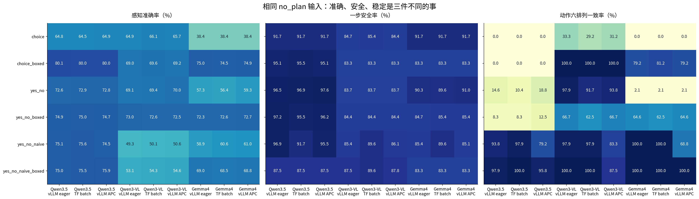
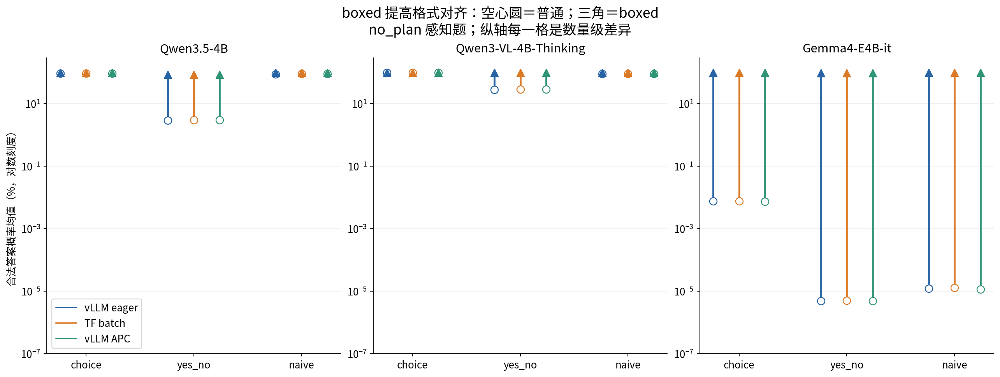
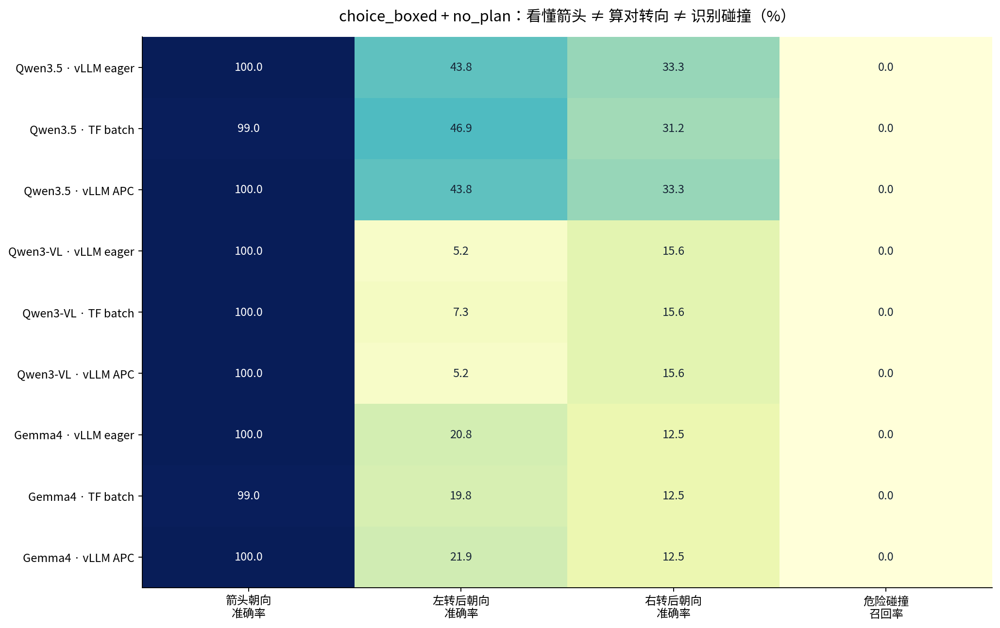
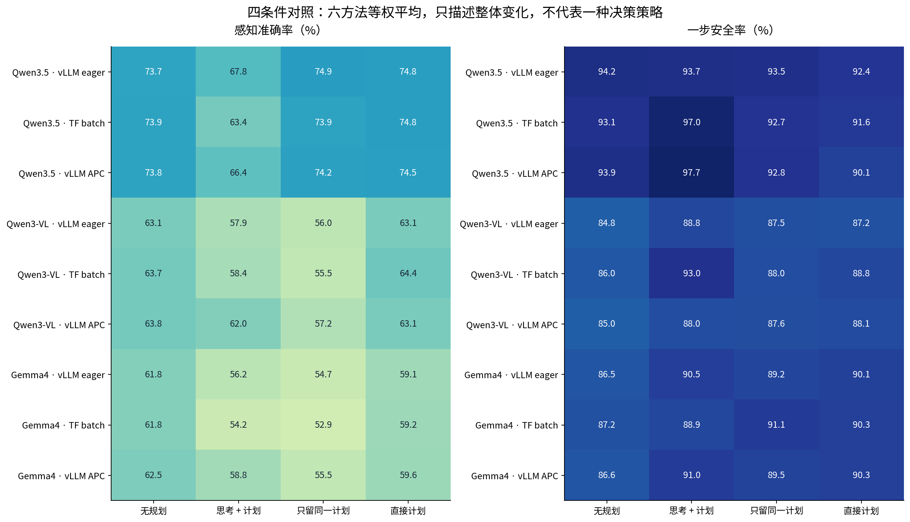
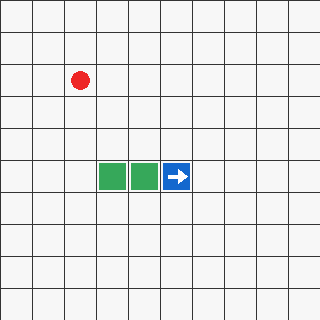
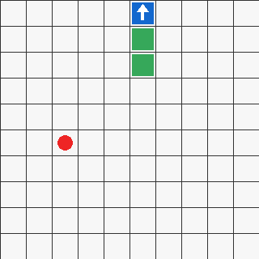
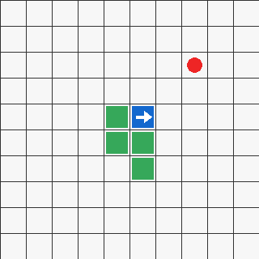
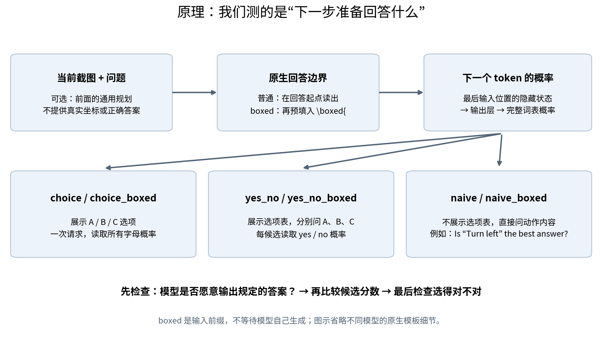
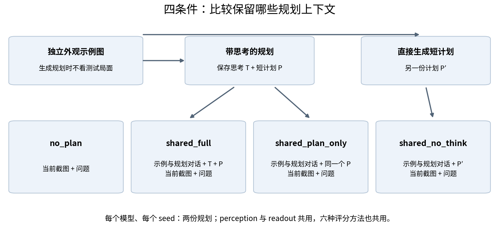
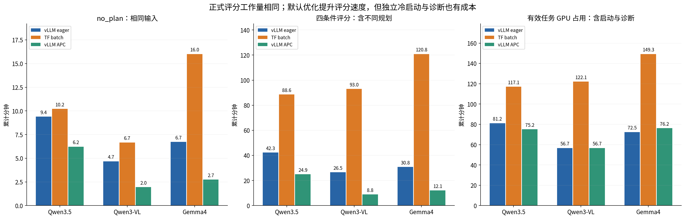

历史资料 · 指标与成绩仅适用于原报告版本
本页目录
- 三模型历史实验结果
- 主要结果
- 错误案例
- 测试方法
- 怎样读分数
- 评分速度与总成本
- 后续实验
- 数据与复现
- 附录 A：原 vLLM 报告的全部表格
- A.1 1. 实验设置与阅读方式
- A.2 1.1 六种评分方法
- A.3 1.2 四个条件与规划复用
- A.4 1.3 数量、硬件与完成状态
- A.5 2.1 任务表现与排列一致率
- A.6 2.2 原始概率、归一化分数与合法答案概率
- A.7 2.3 标签偏好、漂移和并列
- A.8 2.4 成本与差值字段
- A.9 3.1 Boxed 明显改善格式对齐，但这不是对“能力”的统一增益
- A.10 3.4 总感知分数掩盖了转向和碰撞判断的缺陷
- A.11 3.6 同样的 naive 输入仍存在输出漂移，需与并列选择分开
- A.12 3.7 该怎样选择后续对照配置
- A.13 4.1 no_plan 动作结果与字母选择
- A.14 4.2 总推理成本
- A.15 Qwen3.5-4B
- A.16 Qwen3-VL-4B-Thinking
- A.17 Gemma4-E4B-it
- 附录 B：Transformers batch 完整结果
- 附录 C：vLLM default + APC 完整结果
- 附录 D：六种历史 prompt 与输入构造（snake-bench-v3）
三模型历史实验结果§
历史报告 · 2026-10-13 · snake-bench-v3
本实验测试三个视觉模型能否从贪吃蛇截图中判断状态、选择安全动作。比较六种答案读取方法，以及 vLLM eager、Transformers batch、vLLM default + APC 三套执行配置。
三组实验已完成：248,832 条正式评分、144 份规划、72 个有效单卡任务。结果表明：回答格式正确、换选项后答案一致、答案本身正确，需要分别检查。
主要结果§
这里的“感知”混合视觉识别与规则判断。“动作安全率”只看下一步是否碰撞。“动作一致率”要求同一张图换六种选项顺序后，仍选同一个动作。三组没有连续游戏实验。
- 固定字母也能得到 91.67% 安全率。 Qwen3.5 的原始 choice 全选 C，Gemma 全选 A；两者动作一致率都是 0%。
- 全部回答“安全”会漏掉所有危险。 在 choice_boxed + no_plan 下，三模型、三配置的碰撞题准确率都是 91.67%，危险召回率都是 0%。
- boxed 改善格式，不保证选对。 三组中，每组 72 个配对的合法答案概率都提高；任务分数仍有下降的配对。
- 本次规划效果无法代表完整策略。 144 份短计划全部达到 128 token 上限，未完整结束。shared_full 的平均感知准确率均低于 no_plan。
下表是无计划基线（no_plan），对六种读出方法等权平均。它描述本次结果，不是一条可直接运行的策略，也没有显著性检验。
| 模型 | 配置 | 感知准确率 | 感知正反一致率 | 动作安全率 | 安全且趋近食物率 | 动作六排列一致率 |
|---|---|---|---|---|---|---|
| Qwen3.5-4B | vLLM eager | 73.75% | 78.78% | 94.16% | 44.68% | 35.76% |
| Qwen3.5-4B | TF batch | 73.90% | 79.01% | 93.11% | 45.78% | 36.11% |
| Qwen3.5-4B | vLLM APC | 73.80% | 78.59% | 93.92% | 44.73% | 34.38% |
| Qwen3-VL-4B-Thinking | vLLM eager | 63.08% | 88.77% | 84.84% | 38.25% | 82.64% |
| Qwen3-VL-4B-Thinking | TF batch | 63.68% | 88.39% | 86.00% | 38.77% | 80.21% |
| Qwen3-VL-4B-Thinking | vLLM APC | 63.77% | 88.35% | 84.95% | 37.73% | 77.08% |
| Gemma4-E4B-it | vLLM eager | 61.82% | 68.90% | 86.46% | 39.47% | 57.64% |
| Gemma4-E4B-it | TF batch | 61.84% | 67.98% | 87.15% | 37.04% | 57.64% |
| Gemma4-E4B-it | vLLM APC | 62.50% | 65.51% | 86.63% | 37.21% | 52.43% |

查看分项结果、规划截断和分数漂移
3.1 boxed 确实让答案更像答案，但不会自动让答案更对§

图 3 只取 no_plan 感知题。纵轴是对数刻度：Gemma 普通 yes/no 的合法概率极小，boxed 后接近 100%，差的是多个数量级。蓝色是 vLLM eager，橙色是 TF batch，绿色是 vLLM APC；空心圆是普通版本，三角是 boxed。
每组配置都有 72 组 boxed 配对（3 模型×2 阶段×4 条件×3 方法家族）。三组各自的 72 个配对，合法答案概率均值全部提高。 但对应任务表现——感知看准确率、动作看安全率——旧 vLLM 是 48 组提高、22 组下降、2 组持平；TF 是 43/24/5；APC 是 44/23/5。这是对本次观测的计数，不是显著性检验。
最清楚的例子是 Gemma 的 no_plan 感知：choice 准确率在前两组都是 38.43%，加 boxed 后分别为 75.00% 和 74.54%。这个提升跨后端复现。前两组中，Qwen3.5 对应为 vLLM eager 64.81%→80.09%，TF 64.47%→79.98%；Qwen3-VL 为 64.93%→68.98%、66.09%→69.56%。
这些记录支持读出格式不匹配的解释。 合法答案 token 的概率很低，但这不能说明模型仍在思考，也不能确定它原本想输出什么。
3.2 换后端没有消除选项偏好§
图 4 每三列使用同一个模型，依次为 vLLM eager、TF batch、vLLM APC。三个面板应一起看：最左是判断正确性，中间是一步安全，最右是换选项顺序后的稳定性。
三组都复现了明显的固定标签现象：Qwen3.5 的原始 choice 在 288 次 no_plan 动作评分中全部选 C；Gemma 全部选 A。两者安全率都达到 91.67%，但六排列语义一致率都是 0%。Qwen3.5 改成 choice_boxed 后，动作一致率仍然是 0%。格式问题和选项偏好是两件事，boxed 没有一次解决两者。
这个 91.67% 并不神奇：48 张图里有 36 张的三个动作都安全，另外 12 张各只有一个危险动作。六种排列下固定选一个字母，会均匀轮到三个语义动作，因此安全率为 (36×6 + 12×4) / (48×6) = 91.67%。这是由现有数据结构直接算出的参照，不是额外跑了随机游戏。
即使不看字母，稳定也不是终点。Qwen3-VL 的 choice_boxed 在三组各自的 288 次 no_plan 动作读出中都选择直行，一致率 100%，安全率却只有 83.33%，趋近食物率 33.33%。它确实不受排列影响，但也没有充分根据截图调整动作。
3.3 TF 的 naive 分数更稳定；并列问题仍然存在§
| 模型 | 方法 | 配置 | 最大归一化分数漂移 | 并列最大值评分数 |
|---|---|---|---|---|
| Qwen3.5-4B | yes_no_naive | vLLM eager | 8.2641 pp | 162 / 4,608 |
| Qwen3.5-4B | yes_no_naive | TF batch | 0.0000 pp | 108 / 4,608 |
| Qwen3.5-4B | yes_no_naive | vLLM APC | 8.7655 pp | 119 / 4,608 |
| Qwen3.5-4B | yes_no_naive_boxed | vLLM eager | 7.2425 pp | 98 / 4,608 |
| Qwen3.5-4B | yes_no_naive_boxed | TF batch | 0.0000 pp | 76 / 4,608 |
| Qwen3.5-4B | yes_no_naive_boxed | vLLM APC | 5.0775 pp | 75 / 4,608 |
| Qwen3-VL-4B-Thinking | yes_no_naive | vLLM eager | 0.0000 pp | 58 / 4,608 |
| Qwen3-VL-4B-Thinking | yes_no_naive | TF batch | 0.0000 pp | 108 / 4,608 |
| Qwen3-VL-4B-Thinking | yes_no_naive | vLLM APC | 5.3528 pp | 129 / 4,608 |
| Qwen3-VL-4B-Thinking | yes_no_naive_boxed | vLLM eager | 4.5105 pp | 20 / 4,608 |
| Qwen3-VL-4B-Thinking | yes_no_naive_boxed | TF batch | 0.0000 pp | 34 / 4,608 |
| Qwen3-VL-4B-Thinking | yes_no_naive_boxed | vLLM APC | 5.9068 pp | 22 / 4,608 |
| Gemma4-E4B-it | yes_no_naive | vLLM eager | 0.0000 pp | 22 / 4,608 |
| Gemma4-E4B-it | yes_no_naive | TF batch | 0.0000 pp | 58 / 4,608 |
| Gemma4-E4B-it | yes_no_naive | vLLM APC | 14.0353 pp | 72 / 4,608 |
| Gemma4-E4B-it | yes_no_naive_boxed | vLLM eager | 0.0000 pp | 12 / 4,608 |
| Gemma4-E4B-it | yes_no_naive_boxed | TF batch | 0.0000 pp | 4 / 4,608 |
| Gemma4-E4B-it | yes_no_naive_boxed | vLLM APC | 7.9816 pp | 7 / 4,608 |
这里汇总两个阶段、四条件，pp 表示百分点。例如 0.08264 的分数差等于 8.264 个百分点。每个方法的并列分母为 4,608 次评分。
每模型重建了 11,904 个唯一 naive 候选输入，并比较了 16,512 次重复输入，核对原始 token 与图像哈希。TF 本轮相同候选跨排列的 score 和 q 漂移均为零；旧 vLLM 的 Gemma 原本也是零，APC 组却增至 0.14035（14.035 个百分点）。Qwen3.5 的两种 naive 最大漂移由 0.08264 增至 0.08765，Qwen3-VL 由 0.04510 增至 0.05907。这里描述观测到的整套配置差异，并未隔离某项优化的因果作用。
需要把三种来源分开：一是提示本身包含选项顺序；二是输入相同，但运行时数值计算有变化；三是分数相同，却因并列取首项而改变动作。naive 去掉第一种来源，TF 本轮消除了重排检查里观察到的第二种，第三种仍在。第 5 节给出精确并列的真实案例。
另外，相同 batch 只是换顺序，与改变 batch 大小是不同的测试。 GPU 启动检查中，BF16 单条与混合 batch 的原始 log-prob 仍有差异。不能把这次零漂移推广成“TF 在任何 batch 组织下逐位相同”，也尚未定位 vLLM 漂移来自哪个具体内核。
3.4 看得出箭头，却经常算不对转向和碰撞§

图 5 固定 choice_boxed + no_plan。前三列每项有 96 次评分；最后一列是 24 次真实危险判断中，成功识别危险的比例，不是总体碰撞题准确率。
三个模型在三组配置中几乎都能认出箭头方向，但左转和右转后的绝对方向明显更难。Qwen3-VL 的箭头识别是 100%，左转后朝向却只有 5.21% / 7.29% / 5.21%（eager / TF / APC）。这更像从视觉事实到相对坐标变换之间出现了缺口，不能简单归咎于“图片没看见”。
更值得警惕的是碰撞题：在这个方法和条件下，三个模型、三组配置都把各自的 288 道碰撞判断全答成 safe。264 道真实安全题答对，24 道真实碰撞题全部漏掉，总体准确率 91.67%，危险召回率却是 0%。这个结论只针对 choice_boxed + no_plan；其他方法不能一概而论。例如旧 vLLM 的 Qwen3-VL naive_boxed 能检出部分碰撞，却有大量误报。
动作评价也应关注那 12 张确实有危险选项的图。旧 vLLM / TF 的 Qwen3.5 no_plan naive 在这些图上安全率是 87.50% / 66.67%，naive_boxed 则两者都为 50.00%；Qwen3-VL naive_boxed 为 50.00% / 58.33%。因此，TF 的零分数漂移和更高的一致率，并不等于在危险局面上做得更好。
3.5 加规划没有统一收益，而且本次短计划全部被截断§

图 6 对六方法等权平均，只描述总体变化，不代表一种可以直接部署的策略。三组、三个模型的 shared_full 感知准确率都低于 no_plan。动作安全率却不是同一趋势：TF 的 Qwen3.5 为 93.11%→96.99%，Qwen3-VL 为 86.00%→93.00%，Gemma 为 87.15%→88.95%。
可以说通用规划前缀改变了读出行为；但还不能说“规划整体有用”或“思考没有用”。它没有看当前测试局面，而且三组共 144 份短计划全部在 128 token 上限处截断。原文中还出现标题、规则重述和任务介绍。拿这样的 plan_only 测不到收益，不等价于一份完整、清晰的短策略没有价值。
前两组的 greedy 规划也不完全相同。Qwen3.5 在旧 vLLM 中的 thinking 达到 2048 token 上限，TF 中自然结束，实际内容长 2044 token；只差四个 token，不能把耗时差归因于长度。Qwen3-VL 两边均触及 thinking 预算，Gemma 的平均 thinking 长度为 942 / 1048。APC 组三模型的 thinking 总长度分别为 13,623、16,384、8,248 token，每模型 16/16 份短计划截断。跨配置比较共享规划条件时，计划内容和评分计算都可能变化，需与 no_plan 的直接对照区分。
错误案例§
前四例比较旧 vLLM eager 与 TF batch；第五例检查 APC 的分数变化。案例用于解释错误，不代表随机样本。截图已按原始图像哈希核验；完整记录见 case-evidence.json。事件 ID 需结合后端与模型使用。
案例一：候选分数超过 98%，答案仍然错误§

Gemma，no_plan，截图 open-00-r0，heading 题，排列 0。 白箭头明确朝右。候选是 A=Up、B=Right、C=Down、D=Left，正确答案是 B。
| 后端 | 方法 | 合法字母总概率 | 选中答案 | 候选内归一化分数 | 结果 | 事件 ID |
|---|---|---|---|---|---|---|
| vllm | choice | 0.014040% | A / 向上 | 98.5008% | 错误 | e00000 |
| vllm | choice_boxed | 99.998190% | B / 右转 | 99.9672% | 正确 | e00002 |
| transformers | choice | 0.014055% | A / 向上 | 98.4216% | 错误 | e00000 |
| transformers | choice_boxed | 99.998550% | B / 右转 | 99.9707% | 正确 | e00002 |
普通 choice 选错，但候选内分数超过 98%。加 boxed 后，两后端都答对。候选内高分不等于模型原本就准备输出这个答案。
这个案例支持读出格式不匹配的解释。它不能证明 boxed 可以修复其他错误。
案例二：固定选 C，换选项后撞墙§

Qwen3.5，choice + no_plan，截图 wall-04-r0。 蛇头在上边界朝上，直行会撞墙，左转、右转都安全。两个后端在所有排列里都选 C。
| 排列 | A / B / C 对应动作 | 两后端都选 | 实际动作 | 后果 | 两后端事件 ID |
|---|---|---|---|---|---|
| 0 | 左转 / 直行 / 右转 | C | 右转 | 安全 | e09648 |
| 1 | 左转 / 右转 / 直行 | C | 直行 | 撞墙 | e09649 |
| 2 | 直行 / 左转 / 右转 | C | 右转 | 安全 | e09650 |
| 3 | 直行 / 右转 / 左转 | C | 左转 | 安全 | e09651 |
| 4 | 右转 / 左转 / 直行 | C | 直行 | 撞墙 | e09652 |
| 5 | 右转 / 直行 / 左转 | C | 左转 | 安全 | e09653 |
图片和动作集合没有变化。模型始终选 C，导致六次选择中两次撞墙。全量 288 次都选 C，也支持模型偏向固定字母的判断。91.67% 的总体安全率掩盖了这个问题。
案例三：把撞墙答成安全§
沿用上面的 wall-04-r0 截图，改问“直行会不会立即碰撞”。Qwen3-VL，choice_boxed + no_plan 在两个后端、正反两种排列里都选择 safe，真实答案却是 collision。原始记录见案例文件的 collision 项。
模型按要求的格式、稳定地答错了。全量结果中，这一条件下的三个模型、三套配置都漏判了 24 道真实碰撞题。因此，还需单独统计识别出多少危险。
案例四：分数并列，程序选择排在前面的动作§

Qwen3.5，TF，yes_no_naive + no_plan，截图 body_tail-09-r1。 同一候选在六种排列中的分数没有变化。左转和直行的 q 都是 0.18242551936144571，右转的 q 是 0.11920292202211753；归一化后左转与直行精确并列第一。
| 排列 | 候选次序 | 左转分数 | 直行分数 | 右转分数 | 选中 | 后果 | 事件 ID |
|---|---|---|---|---|---|---|---|
| 0 | 左转 / 直行 / 右转 | 0.376870213 | 0.376870213 | 0.246259574 | 左转 | 安全 | e21768 |
| 1 | 左转 / 右转 / 直行 | 0.376870213 | 0.376870213 | 0.246259574 | 左转 | 安全 | e21769 |
| 2 | 直行 / 左转 / 右转 | 0.376870213 | 0.376870213 | 0.246259574 | 直行 | 安全 | e21770 |
| 3 | 直行 / 右转 / 左转 | 0.376870213 | 0.376870213 | 0.246259574 | 直行 | 安全 | e21771 |
| 4 | 右转 / 左转 / 直行 | 0.376870213 | 0.376870213 | 0.246259574 | 左转 | 安全 | e21772 |
| 5 | 右转 / 直行 / 左转 | 0.376870213 | 0.376870213 | 0.246259574 | 直行 | 安全 | e21773 |
程序在并列时取第一个最高分。左转和直行谁排在前面，就选谁。这里的变化来自并列处理，分数本身没有变化。
后续可将并列记为“不确定”，或预先固定与选项顺序无关的处理规则。后一种做法也会引入动作偏好。本报告保留原规则和原分数。
案例五：输入相同，分数仍然变化§
APC 的 Gemma 在 wall-07-r3 / collision_straight / no_plan / yes_no_naive 中，safe 候选的输入 token 和图片不变，但事件 e18152、e18153 的缓存命中分别为 384、416 token，候选归一化分数为 0.64627、0.50592，漂移 0.14035。原始 yes/no 概率和其他候选共同影响最终归一化分数，不能将其视为单个 logit 的差值。
Qwen3.5 的 body_tail-09-r2 / readout / shared_no_think / yes_no_naive 提供另一种情况：left 候选六个排列均命中 528 token，但 batch 位置从 0 变为 1/2 时，yes log-prob 从 −1.60677 变为 −1.91568，归一化分数从 0.40333 变为 0.31567；其他排列又为 0.33778。相同缓存深度下也有漂移，不能把所有变化都解释成冷缓存与暖缓存的差异。
三模型最大漂移的完整原始记录见 APC 漂移案例。这些例子说明应检查运行时计算路径，并不证明某一项优化独自造成漂移；batch 位置、其他候选分数和 kernel 选择尚未被独立控制。
测试方法§
三个模型分别是 Qwen3.5-4B、Qwen3-VL-4B-Thinking、Gemma4-E4B-it。48 张截图来自 12 个基础局面的四种旋转。模型只接收规则、图片和问题；真值只用于评分。
六种读出方法分别改变候选呈现方式和答案读取位置。四个规划条件比较是否加入通用策略；规划只看独立示例图。
查看六种读出、四个规划条件和实验设置
历史报告：使用 snake-bench-v3。迁移到 v4 时，
choice_boxed改名为choice，yes_no_naive_boxed改名为yes_no。本文保留旧名称；六种提示词见附录 D。
棋盘是 10×10。蓝色蛇头里的白箭头表示朝向，绿色方格是蛇身，红色圆点是食物。左转和右转以蛇当前朝向为参照；每次移动一格。撞墙或撞身会失败，没吃食物时尾巴会腾出原来的格子。模型只看规则和图像；真实坐标、正确答案和安全动作清单只供评估程序使用。
48 张截图来自 12 个基础局面的四种旋转，包括空地、墙边、蛇身与尾巴、食物变化。模型只做两类测试：
| 阶段 | 要回答的问题 | 同一截图怎样重复测试 | 检查什么 |
|---|---|---|---|
| perception：感知与规则判断 | 箭头朝哪、食物在哪、转向后朝哪、是否会撞 | 9 类问题，每题正反两种候选排列 | 判断是否正确，换排列是否一致 |
| readout：动作读出 | 下一步左转、直行还是右转 | 三个动作的全部 6 种排列 | 当前一步是否安全、是否靠近食物、换排列是否一致 |
九类题分别是：箭头朝向；食物的水平、垂直位置；左转、直行、右转后的绝对朝向；三个动作是否立即碰撞。后六题已经要求应用规则，因此这里的“感知准确率”不等于纯粹的看图识别能力。
本轮没有连续玩游戏。 所有动作都只评估当前一步，没有 episode、闭环轨迹或随机游戏基线。一步安全不代表长期能活，靠近食物也不代表最终一定吃到。
1.1 六种方法：问法与读出位置分别改变§

图 1 是原理示意。输入先经过模型，最后一个真实输入位置的隐藏状态经过输出层，得到完整词表上的下一 token 概率。我们读取其中指定答案 token 的概率，选出候选；不是直接把隐藏状态里的某个维度当作答案。
| 方法 | 模型看见的候选信息 | 问法 | 从哪里读答案 |
|---|---|---|---|
choice |
完整的 A/B/C… 选项表 | 选最好的选项，回复字母 | 原生回答起点 |
choice_boxed |
同上 | 要求把字母放进 boxed | 预填 \boxed{ 之后 |
yes_no |
完整的字母选项表 | 逐个问 Is option A the best choice? |
原生回答起点，读取 yes/no |
yes_no_boxed |
同上 | 同上，要求 boxed 格式 | 预填 \boxed{ 之后，读取 yes/no |
yes_no_naive |
原问题和当前候选的描述；没有选项表和字母 | 直接问这项内容是不是答案 | 原生回答起点，读取 yes/no |
yes_no_naive_boxed |
同上 | 同上，要求 boxed 格式 | 预填 \boxed{ 之后，读取 yes/no |
例如 naive 的实际提示末段是：
Which action should the snake take next?
Is "Turn left" the best answer to the question above? Reply exactly yes or no.
boxed 版本将末句改成：
Reply with exactly \boxed{yes} or \boxed{no}, with no explanation.
并在 assistant 的原生回答边界之后，主动补上字面量 \boxed{。以 Qwen 模板为例，位置在 </think> 之后；Gemma 使用自己的原生边界，不能把 Qwen 的标记硬套给所有模型。补上前缀后，直接读取后面的字母或 yes/no，不等待模型自己写出整段解释和花括号。
这里有两个容易混淆的地方。第一，本轮 yes_no 仍保留字母选项表；用户希望的“只问 is xxx…，不出现默认 ABC 集合”由 yes_no_naive 实现。第二，boxed 同时改变了用户指令和 assistant 前缀，因此它测的是这套组合的效果，不是只改一个 token 的严格消融。
choice 一次请求就能读取全部候选字母。yes/no 家族对每个候选分别构造一个输入；有 K 个候选，就有 K 个候选请求，但这些请求可以放进同一次 batch 并行计算。
1.2 四个条件：前面要不要放一份通用规划§

| 条件 | 在当前截图之前保留什么 | 与其他条件的配对关系 |
|---|---|---|
no_plan |
没有规划 | 只看规则、当前截图和问题 |
shared_full |
外观示例与规划对话、完整思考和短计划 | 每个 seed 生成一份带思考的规划 |
shared_plan_only |
同一个示例与规划对话、同一份短计划，去掉思考正文 | 直接复用 full 的原始 plan token，不重新生成 |
shared_no_think |
示例与规划对话、不经过 thinking 而单独生成的短计划 | 是另一份计划，不是删掉 full 的思考 |
规划只看独立的外观示例，不看当前测试截图。相同模型、相同 seed 的规划由 perception、readout 及六种方法共用。比较 full 与 plan_only，比较的是是否保留同一段思考；比较 full 与 no_think，还混入了计划内容本身的变化。
1.3 三组的规模和执行方式§
| 统计单位 | 每模型、每组 | 三模型、每组 | 三组合计 |
|---|---|---|---|
| 感知评分 | 20,736 | 62,208 | 186,624 |
| 动作评分 | 6,912 | 20,736 | 62,208 |
| 正式评分 | 27,648 | 82,944 | 248,832 |
| 候选评分请求 | 66,048 | 198,144 | 594,432 |
| 保存的规划 | 16 | 48 | 144 |
| 有效单卡任务 | 8 | 24 | 72 |
每个“模型 × 方法 × 条件”有 864 次感知评分（48×9×2）和 288 次动作评分（48×6）。感知一致率的分母是 432 组正反排列，动作一致率的分母是 48 组六排列。
三个模型是 Qwen3.5-4B、Qwen3-VL-4B-Thinking、Gemma4-E4B-it。每个模型的 seed 0–7 分开提交任务，每个 seed 负责六张图、两份规划。种子轮流分配截图，不是每张图跑八遍；规划采用 greedy，八个 seed 不应当成八次独立随机重复。
三组均使用开发区 H100 CUDA 13.2、183 核分区，单卡 H100 80GB、TP1、BF16、8192 上下文，单任务 20 CPU、200 GiB 内存及等量共享内存，公共科研项目、优先级 4。thinking 上限 2048 token，短计划上限 128 token。权重大小和 SHA256、配置、模板及处理器一致。环境为 PyTorch 2.13.0+cu130、vLLM 0.31.0、Transformers 5.17.0；第三组节点驱动为 595.58.03。沿用镜像 ngc-pytorch-cu128-dev:1.1，镜像名、CUDA 13.2 分区名和实际 PyTorch runtime 是不同层面的版本记录。
| 本文名称 | 数据中的配置标识 | 前缀缓存 | 执行与调度 |
|---|---|---|---|
| vLLM eager／旧 vLLM | vllm_eager |
关闭 | enforce_eager=True，禁用编译和 CUDA Graph；显存比例 0.65，max_num_seqs=26，max_num_batched_tokens=8192 |
| TF batch | transformers_batched |
无跨请求 KV 复用 | eager attention，原生候选 batch，microbatch 上限 8 |
| vLLM APC／默认优化组 | vllm_default_apc |
显式开启 | 不覆盖 eager、编译、调度和显存默认值；实际显存比例 0.92、1024 seqs、16384 batched tokens、编译模式 3、FULL_AND_PIECEWISE CUDA Graph |
下文简称 APC 的始终是整套默认优化配置。第三组同时改变 APC、编译、Graph、调度上限和显存配额，测量的是整套配置收益，不能单独归因于其中一个开关。各轮不是同一时刻、同一物理卡的微基准。
三组正式结果均无 pending、failed、unsupported；各 24 个有效任务成功、退出码为 0，资源已释放。TF 和 APC 各有 576 条固定旧 vLLM 规划的 readout 诊断，合计 1,152 条，另有启动检查；它们均不计入正式评分。停止的 TF 串行尝试和 APC 首次失败 pilot 另行记录成本，见第 7 节。
TF 正式组使用 batch。 同一次 yes/no 评分的候选以张量 batch 同时 forward；choice 只需一个请求。三组都未跨不同实验条目合并评分 batch。TF 使用左侧 padding，读取每条输入最后的真实位置，input_tokens 不计 padding；图像经过实际多模态处理器。规划保留逐请求 RNG，思考和短计划有前后依赖，逐请求生成；跨 seed 通过独立任务并行。保存的规划使用原始 token ID，不经过解码再编码。
怎样读分数§
候选内高分不等于答对概率。 先检查模型是否准备输出规定答案，再检查答案是否正确、动作是否安全。始终选同一动作可以达到 100% 一致率，也可能一直撞墙。
查看指标定义、分母和计算公式
2.1 先看原始概率，再看候选内排名§
logprob 是完整词表概率的自然对数，P = exp(logprob)。例如 choice 的三个合法 token 是 A/B/C：
合法答案概率 M = P(A) + P(B) + P(C)
候选分数 score(A) = P(A) / M
如果 P(A)=0.00006，P(B)=0.00004，两个合法答案一共只有 0.01% 概率；归一化后却会出现 A=60%、B=40%。这不代表模型有 60% 的把握认为 A 正确，而是“硬要在 A/B 里选，它比较偏向 A”。绝大部分概率可能落在其他 token 上。
yes/no 方法先对每个候选 i 单独计算：
M_i = P_i(yes) + P_i(no)
q_i = P_i(yes) / M_i
score_i = q_i / 所有候选 q 的总和
q_i 在原始记录里叫 yes_score。几个候选可以同时得到较高的 q；最终按 score 选最大项，不是对 q 再做一次 softmax。这些分数都没有经过正确率校准，不应直接解读成“动作安全的概率”。
报告的“合法答案概率”只包含指定的单 token 大写字母或小写 yes/no，不包含空格、其他大小写或同义句。choice 对题目求均值，yes/no 对候选请求求均值，所以四选题在后者中权重比二选题大。图中接近 0% 或 100% 的显示值也可能来自舍入，不是精确零或一。
2.2 正确、安全、稳定各有自己的分母§
| 指标 | 具体含义 | 最常见的误读 |
|---|---|---|
| 感知准确率 | 所选语义答案与真实状态相符的比例 | 高分不代表九类能力都好；题型混有二、三、四选题 |
| 一步安全率 | 所选动作下一步不会撞墙、撞身 | 不表示长期存活或最优决策 |
| 趋近食物率 | 安全且下一步到当前食物的曼哈顿距离变短，占全部动作评分的比例 | 不是只在安全动作中计算；安全绕行也可能不靠近食物 |
| 排列一致率 | 感知两次、动作六次都选同一语义答案的组数比例 | 不是字母相同；也不是答案一定正确 |
| 合法答案概率 | 规定的字母或 yes/no 在完整词表里占多少概率 | 只衡量格式与读出位置是否匹配 |
| 最大分数漂移 | 相同候选跨排列的最大 score 差值，再取所有组中的最大值 | 是最坏个例，不是平均差异 |
| 并列最高分次数 | 一次评分至少两个候选精确并列第一，就计一次 | 当前实现取首个最大值，零漂移也可能换答案 |
左转从 A 移到 C，模型也跟着改选 C，属于语义一致。反过来，一直选 A，而 A 对应的动作在变，则不一致。六次中五次选左转、一次选右转，整组一致率记为 0；一直直行可以达到 100% 一致，但可能稳定地撞墙。
标签偏好也要结合曝光次数看：动作题每个字母都出现 288 次；感知题 A/B 各出现 864 次，C 出现 576 次，D 出现 384 次。naive 根本不展示字母，标签计数为空，不应解释为已经证明了所有形式的无偏。
评分速度与总成本§
评分更快，总成本几乎没变。 默认优化 vLLM 的正式评分耗时为 2,751.2 秒，旧 eager 为 5,977.6 秒。有效任务 GPU 时间分别为 3.470 和 3.506 小时；加载、编译和检查也占用 GPU。
默认优化组同时改变了缓存、编译、CUDA Graph 和调度设置。这些结果不能单独归因于前缀缓存。

查看各模型耗时、缓存命中和成本口径
4.1 质量没有统一赢家§
下表只使用相同输入的 no_plan，对六方法等权平均，不代表某条实际决策策略。默认优化组三个模型的动作六排列一致率均低于旧 vLLM；较小的准确率差异不能直接解释为显著提升。
完整 no_plan 对照表见前面的“主要结果”。
4.2 默认优化加速了评分，但总 GPU 成本变化很小§
图 7 的评分时间是同步 backend.generate 调用耗时的累加；一次 yes/no 评分包含整个候选 batch。候选请求没有独立的延迟测量。平台 GPU 时间还含加载、编译、启动检查、规划、诊断和退出，不等于并行任务完成的日历时长。各轮验证工作量也不同：TF 有固定规划诊断，APC 另有冷暖缓存检查，因此 GPU 成本不是等验证工作量的微基准。
| 模型 | 范围 | eager 秒 | TF 秒 | APC 秒 | APC 对 eager 加速 | APC 对 TF 加速 |
|---|---|---|---|---|---|---|
| Qwen3.5-4B | no_plan | 564.1 | 613.6 | 373.5 | 1.51× | 1.64× |
| Qwen3.5-4B | 四条件合计 | 2540.6 | 5317.0 | 1495.3 | 1.70× | 3.56× |
| Qwen3-VL-4B-Thinking | no_plan | 280.6 | 400.2 | 117.3 | 2.39× | 3.41× |
| Qwen3-VL-4B-Thinking | 四条件合计 | 1591.5 | 5579.9 | 530.0 | 3.00× | 10.53× |
| Gemma4-E4B-it | no_plan | 404.1 | 960.7 | 165.0 | 2.45× | 5.82× |
| Gemma4-E4B-it | 四条件合计 | 1845.4 | 7249.8 | 725.8 | 2.54× | 9.99× |
| 配置 | 正式评分累计秒 | 有效任务 GPU 小时 |
|---|---|---|
| vLLM eager | 5977.6 | 3.506 |
| TF batch | 18146.7 | 6.474 |
| vLLM APC | 2751.2 | 3.470 |
全部正式评分从旧 vLLM 的 5,977.6 秒减至 APC 的 2,751.2 秒，提升 2.17×；相对 TF 的 18,146.7 秒提升 6.60×。但有效任务 GPU 时间为 3.506 → 3.470 小时。APC 若计入失败 pilot，总占用为 3.616 GPU 小时；TF 已停止的早期串行尝试另有约 0.073 GPU 小时。本轮接口报价为每卡小时 1 计费单位，成本按实际占用估算，不能只按正式评分秒数计费。
TF 使用 eager attention，Qwen3.5 线性注意力走参考 PyTorch 实现；当前环境未安装可选 FLA/causal-conv 加速。尚未跨实验条目拼 batch，因此结果只代表当前配置，不代表各框架性能极限。TF forward 直接读取完整词表 log-softmax，评分 output_tokens=0；vLLM 每候选请求生成一个 token 读取分数，不能用 output_tokens 比较吞吐。
4.3 APC 命中与启动开销§
每个 job 持有独立前缀缓存和新的编译缓存目录；启动诊断结束后、每份规划生成前清空 KV 前缀缓存，正式评分之间保留缓存且沿用原请求顺序。后面的题目可能复用之前的公共前缀。以下缓存 token 比例按输入 token 加权，有命中请求比例按候选请求计数。
| 模型 | 条件 | APC 评分秒 | 对 eager 加速 | 对 TF 加速 | 缓存 token / 输入 token | 有命中请求比例 |
|---|---|---|---|---|---|---|
| Qwen3.5-4B | no_plan | 373.5 | 1.51× | 1.64× | 0.00% | 0.00% |
| Qwen3.5-4B | shared_full | 404.7 | 2.21× | 6.84× | 87.87% | 99.95% |
| Qwen3.5-4B | shared_plan_only | 359.8 | 1.50× | 2.69× | 75.16% | 99.71% |
| Qwen3.5-4B | shared_no_think | 357.3 | 1.51× | 2.71× | 75.38% | 99.71% |
| Qwen3-VL-4B-Thinking | no_plan | 117.3 | 2.39× | 3.41× | 89.93% | 100.00% |
| Qwen3-VL-4B-Thinking | shared_full | 159.4 | 4.46× | 23.75× | 98.96% | 100.00% |
| Qwen3-VL-4B-Thinking | shared_plan_only | 126.9 | 2.37× | 5.49× | 96.06% | 100.00% |
| Qwen3-VL-4B-Thinking | shared_no_think | 126.5 | 2.36× | 5.51× | 96.14% | 100.00% |
| Gemma4-E4B-it | no_plan | 165.0 | 2.45× | 5.82× | 92.04% | 100.00% |
| Gemma4-E4B-it | shared_full | 203.8 | 2.79× | 13.21× | 98.09% | 99.90% |
| Gemma4-E4B-it | shared_plan_only | 178.9 | 2.44× | 10.06× | 96.47% | 99.95% |
| Gemma4-E4B-it | shared_no_think | 178.2 | 2.45× | 10.09× | 96.61% | 100.00% |
Qwen3.5 混合注意力的默认缓存块是 528 token；短 no_plan 输入不足一块，因此重复请求也可零命中，而带规划输入已验证每候选至少命中一块。Qwen3-VL、Gemma 的短输入也可命中。这解释了三个模型缓存行为不同；Qwen3.5 的 no_plan 零命中仍有加速，也说明不能把全部收益归因于 APC。
下表为 APC 每 job 平均秒数。compile 和 Graph 是 Engine 加载的子阶段，不能再次相加；正式阶段墙钟包含规划、评分和输出写入。
| 模型 | Engine 加载 | 其中 compile | 其中 Graph | 启动检查 | 正式阶段墙钟 | 固定规划诊断 |
|---|---|---|---|---|---|---|
| Qwen3.5-4B | 243.7 | 19.2 | 15.5 | 3.3 | 281.7 | 2.8 |
| Qwen3-VL-4B-Thinking | 221.1 | 40.9 | 12.0 | 2.2 | 158.1 | 2.0 |
| Gemma4-E4B-it | 350.9 | 70.9 | 41.9 | 12.3 | 170.4 | 2.2 |
实际编译模式和 Graph 模式来自配置及捕获日志，不以初始化成功代替优化生效。历史 receipt 缺少的独立加载阶段记为不可用，不能从平台总时间倒推。逐模型、阶段、方法、条件的均值、P50/P95、吞吐、缓存计数，以及有命中/无命中评分的延迟分布随本文 JSON/CSV 保存；两类评分的题目组成不同，不是严格冷暖缓存因果对照。
4.4 总体均值接近，不代表逐题选择相同§
下表分别列出 no_plan 全部评分（每模型 6,912 条，含感知与动作）和仅动作评分（1,728 条）的分歧率。旧报告中的 6.22%、3.98%、12.69% 使用的是前一个分母。
| 模型 | 对照 | 全部评分分歧率 / 分母 | 仅动作分歧率 / 分母 |
|---|---|---|---|
| Qwen3.5-4B | vllm_eager → transformers_batched | 6.22% / 6,912 | 11.11% / 1,728 |
| Qwen3.5-4B | vllm_eager → vllm_default_apc | 4.17% / 6,912 | 6.48% / 1,728 |
| Qwen3.5-4B | transformers_batched → vllm_default_apc | 6.05% / 6,912 | 11.11% / 1,728 |
| Qwen3-VL-4B-Thinking | vllm_eager → transformers_batched | 3.98% / 6,912 | 6.66% / 1,728 |
| Qwen3-VL-4B-Thinking | vllm_eager → vllm_default_apc | 2.84% / 6,912 | 4.75% / 1,728 |
| Qwen3-VL-4B-Thinking | transformers_batched → vllm_default_apc | 3.54% / 6,912 | 6.60% / 1,728 |
| Gemma4-E4B-it | vllm_eager → transformers_batched | 12.69% / 6,912 | 15.91% / 1,728 |
| Gemma4-E4B-it | vllm_eager → vllm_default_apc | 11.33% / 6,912 | 14.06% / 1,728 |
| Gemma4-E4B-it | transformers_batched → vllm_default_apc | 11.81% / 6,912 | 14.81% / 1,728 |
为减少独立生成规划带来的混杂，TF 与 APC 均复用旧 vLLM 保存的原始规划 token，再跑六方法×四条件的 readout。每组每模型 192 条，含 no_plan 对照，只覆盖八张图、order=0，不能代替全排列矩阵。
| 模型 | 旧 vLLM → TF | 旧 vLLM → APC |
|---|---|---|
| Qwen3.5-4B | 13 / 192 (6.77%) | 10 / 192 (5.21%) |
| Qwen3-VL-4B-Thinking | 16 / 192 (8.33%) | 12 / 192 (6.25%) |
| Gemma4-E4B-it | 37 / 192 (19.27%) | 32 / 192 (16.67%) |
同输入仍可出现 BF16 分数差异，临近并列的 argmax 和生成规划也可能随之改变。这些记录说明差异不只来自规划生成，但没有定位到某一个 kernel。实际使用时，可用默认优化 vLLM 跑矩阵、TF batch 复核关键异常，同时保留原始概率、输入哈希和并列信息。
4.5 完整评分与规划成本§
每行正式工作量相同：27,648 次评分、66,048 个候选请求、24 个规划请求。下表不包含加载和额外诊断。输入 token 是请求累计数，共享前缀重复计入；APC 命中的 token 仍属于输入，不能从此列直接推算计算量。
| 模型 | 配置 | 评分累计秒 | 规划累计秒 | 毫秒/评分 | 评分输入 token | thinking token | plan token |
|---|---|---|---|---|---|---|---|
| Qwen3.5-4B | vLLM eager | 2540.64 | 526.52 | 91.89 | 73,076,736 | 16,384 | 2,048 |
| Qwen3.5-4B | TF batch | 5317.02 | 672.77 | 192.31 | 73,010,688 | 16,352 | 2,048 |
| Qwen3.5-4B | vLLM APC | 1495.32 | 66.65 | 54.08 | 67,378,032 | 13,623 | 2,048 |
| Qwen3-VL-4B-Thinking | vLLM eager | 1591.52 | 387.87 | 57.56 | 72,857,472 | 16,384 | 2,048 |
| Qwen3-VL-4B-Thinking | TF batch | 5579.88 | 556.08 | 201.82 | 72,857,472 | 16,384 | 2,048 |
| Qwen3-VL-4B-Thinking | vLLM APC | 530.04 | 79.59 | 19.17 | 72,857,472 | 16,384 | 2,048 |
| Gemma4-E4B-it | vLLM eager | 1845.43 | 310.04 | 66.75 | 73,192,320 | 7,536 | 2,048 |
| Gemma4-E4B-it | TF batch | 7249.82 | 525.96 | 262.22 | 74,942,592 | 8,384 | 2,048 |
| Gemma4-E4B-it | vLLM APC | 725.82 | 65.22 | 26.25 | 74,661,888 | 8,248 | 2,048 |
后续实验§
- 分开检查格式、选项偏好、数值变化和并列处理。
- 增加存在危险动作的截图，分别测方向识别、转向和碰撞。
- 提高计划预算，检查计划完整性后再比较收益。
- 用连续游戏检查长期策略价值。
旋转图、选项排列和 seed 分片并非独立样本。本报告未计算置信区间，结论限于当时的模型、配置和截图。
查看当时的研究建议与结论限制
第一，先验证读出格式，再讨论推理能力。保留 \boxed{ 作为对照是有价值的；但应该同时看合法概率、正确率和动作结果。若要进一步分清原因，可分别对照“只改格式指令”“只加回答前缀”，目前两者是一起改变的。
第二，顺序偏置应拆开诊断。用 naive 除去候选列表带来的语义顺序信息，固定 backend 和 batch 组织检查分数漂移，再明确处理并列。三步完成后，才能判断剩余差异是不是模型对候选内容本身的判断，而不是把所有问题归到同一种偏置上。
第三，当前诊断集太容易让安全率显得好看。下一轮更值得增加确有危险的局面，分别报告危险召回、误报、危险截图上的动作安全和趋近食物，而不是只把总评分量做大。同时把“看清朝向→完成相对转向→判断碰撞”分开测，有助于定位瓶颈。
第四，先让短计划真正完整，再评价规划是否有用。可以收紧计划格式，检查输出是否包含可执行的决策规则，或单独比较计划预算。这里所有短计划都被截断，尚不足以回答一份完成的好策略能带来多少收益。
以上是下一步实验建议，本次报告没有追加 GPU 推理。结论限定于这三个模型、这三套配置和固定诊断图；旋转图、排列和 greedy 分片彼此相关，没有把 248,832 次评分当作同样数量的独立样本，也没有报告显著性或置信区间。要评价长期策略价值，仍需另做闭环实验。
数据与复现§
结果、案例、来源哈希和失败记录均保留。下列文件用于复核历史结果；旧套件命令不适用于现役 CLI。
查看数据下载、运行记录和验收信息
7.1 完成状态与保留的失败证据§
三组均核验每模型 27,648 条唯一成功结果、16 份规划及跨阶段配对；正式结果无 pending/failed/unsupported、无 episode 或闭环轨迹，72 个有效任务退出码均为 0，GPU 已释放。比较时核对模型配置、模板、问题、候选、截图哈希和实验 ID。naive 输入审计每模型、每组核验 11,904 个唯一候选输入、16,512 次重复配对。
TF 批处理检查覆盖混合长短输入、单图/双图、不同图片、反转 batch 和 microbatch 边界，FP32 单条/批量 log-prob 在 2e-5 容差内一致；真实 GPU 记录候选 [3, sequence_length] forward 和 BF16 差异，六方法均通过实测。历史测试记录为基础套件 75 项（含 3 项可选跳过）、显式三模型处理器/小型随机权重测试 10 项通过、比较脚本 3 项通过。APC 实现测试 85 项中 82 通过、3 可选跳过，真实三模型启动检查另验证模板、图片、token 边界、冷暖缓存及优化生效。它们是各实验当时的验证记录，本次文档合并没有重新运行 GPU 推理。
曾按用户要求停止三个 TF 串行 seed-0 任务，其约 0.073 GPU 小时和日志保留，不进入正式结果。APC 首次 Qwen3.5 pilot 则在正式评分前失败：启动检查错误要求短于 528 token 的输入命中缓存。唯一一次修复只调整检查，允许短输入零命中、要求共享规划输入证明命中，以 repair-1 新快照重跑；正式提示和设置未改。原失败 Python 进程清理时仍留 vLLM 子进程，取证后停止任务，未收到退出码，记为未知；失败成本计入 3.616 GPU 小时，未冒充成功任务。
原始快照、启动脚本、分析脚本、权重校验、Job ID、平台配置、日志和退出码均保留。部分成功任务关闭时有清理残留 worker 的警告，最终退出码仍为 0、平台成功且释放资源。绘图使用已有系统 Python 的 Matplotlib 3.10.0，没有安装或升级推理环境。
7.2 随文数据与重建方法§
- 三组 432 单元 CSV 与 完整配对 JSON：逐模型、阶段、方法、条件的质量、延迟、缓存、配对差异、固定规划诊断、启动检查和阶段成本。
- 三组各 144 行完整结果：vLLM eager、TF batch、vLLM APC，包含标签计数及曝光校正偏好、合法概率、漂移与并列。
- 历史两组配对 CSV / JSON，用于复核原始对照。
- 题型和危险截图分解：前两组、APC；碰撞混淆和转向错误：历史、新组。
- 截图案例记录、APC 漂移原始案例、来源哈希与验收清单。
- 七幅原理/结果图均附同名 PDF，例如 读出原理、六方法结果、三组成本。
原始运行目录及验收入口：
| 配置 | 运行目录 | 验收 |
|---|---|---|
| vLLM eager | outputs/standard-six-20261012T123333Z-cu132-seeds/ |
原始验收 |
| TF batch | outputs/standard-transformers-batched-20261012T140259Z/ |
原始验收 |
| vLLM APC | outputs/standard-vllm-default-apc-20261013T031635Z/ |
原始验收 |
停止的 TF 串行尝试位于 outputs/standard-transformers-20261012T135315Z/。APC 的 private/selected-shards.json 标明 24 个有效分片，private/all-attempts.json 保留全部 25 次尝试；这些历史材料不随文档合并改写。理解本文不需要访问这些目录。
运行 python scripts/build_standard_report_assets.py 可从已保存结果重建三组图、案例、自动表格和来源哈希；不会加载模型或提交 GPU。脚本核验 248,832 条成功结果、144 份截断规划、碰撞混淆、案例图片哈希、432 单元对照，并确认原报告全部表格仍完整保留。正文手工维护，仅标记块由脚本替换。
以下为历史版本的实验公共参数；在当前两方法实现中不能直接运行：
--suite standard --stages perception readout
--methods choice choice_boxed yes_no yes_no_boxed yes_no_naive yes_no_naive_boxed
--conditions no_plan shared_full shared_plan_only shared_no_think
--perception-conditions no_plan shared_full shared_plan_only shared_no_think
--seeds 0 1 2 3 4 5 6 7 --shard-seed N
--device cuda --dtype bfloat16
其中 N=0–7；TF 使用 --backend transformers，APC 使用 --backend vllm --vllm-profile default --enable-prefix-caching，旧组使用历史 eager 配置。分析来源为 merge_snake_shards.py、analyze_standard_matrix.py、compare_backends.py、analyze_backend_insights.py 及 compare_execution_profiles.py；原始冻结配置才是运行复现依据，本文不改写历史命令。结果保留 snake-bench-v3，v1/v2 历史读取能力保持不变。
附录 A：原 vLLM 报告的全部表格§
展开附录 A：原 vLLM 报告的全部表格（原始记录）
以下表格从旧报告逐块原样保留，标题沿用原来的主题；所有“本轮”、成本和漂移数字在这个附录中均指旧 vLLM eager 轮次。 定义表里的 vLLM 输出 token 口径只适用于 vLLM，TF 的对应口径已在正文说明。旧表中的最佳组合是这批截图上选出来的描述性结果，不代表在新数据上的最优方法。
完整结果表的“任务表现”在 perception 中是准确率、readout 中是一步安全率；“趋近食物”含安全约束。一致率在两个阶段分别要求 2/2 和 6/6 同一语义答案。旧表所有数值和精度保持不变。
A.1 1. 实验设置与阅读方式§
| 阶段 | 问什么 | 每张截图的测试 | 评估目标 |
|---|---|---|---|
perception 感知 |
朝向、食物位置、转向后的朝向、是否立即碰撞 | 9 题，每题候选正序和反序各一次 | 所选语义答案是否符合真值 |
readout 动作读出 |
下一步左转、直行还是右转 | 三动作全部 6 种排列 | 一步安全、趋近食物、排列稳定性 |
A.2 1.1 六种评分方法§
| 方法 | 模型看见什么 | 读取什么位置 | 每次评分的请求数 |
|---|---|---|---|
choice |
所有候选及 A/B/C… 字母 | 原生回答边界后的第一个字母 token | 1 |
choice_boxed |
所有候选及字母，指令要求 boxed 格式 | 预填 \boxed{ 后的第一个字母 token |
1 |
yes_no |
所有候选及字母，逐项问 Is option A the best choice? |
原生回答边界后的 yes/no token | K |
yes_no_boxed |
与 yes_no 相同，指令要求 boxed 格式 | 预填 \boxed{ 后的 yes/no token |
K |
yes_no_naive |
原问题和当前候选描述，不显示选项列表及字母 | 原生回答边界后的 yes/no token | K |
yes_no_naive_boxed |
与 naive 相同，指令要求 boxed 格式 | 预填 \boxed{ 后的 yes/no token |
K |
A.3 1.2 四个条件与规划复用§
| 条件 | 如何产生规划 | 评分时保留的上下文 |
|---|---|---|
no_plan |
不生成规划 | 规则、当前截图、问题和回答前缀 |
shared_full |
先生成 thinking，再生成短 plan | 外观示例图与规划对话、完整 thinking + plan，再接当前截图及问题 |
shared_plan_only |
复用 shared_full 的同一份原始 plan token | 保留规划对话、示例图与 plan，去掉 thinking 内容 |
shared_no_think |
不生成 thinking，单独生成短 plan | 该规划对话、示例图与短 plan，再接当前截图及问题 |
A.4 1.3 数量、硬件与完成状态§
| 统计单位 | 每模型 | 三模型合计 |
|---|---|---|
| 感知评分：48×9×2×6 方法×4 条件 | 20,736 | 62,208 |
| 动作评分：48×6 排列×6 方法×4 条件 | 6,912 | 20,736 |
| 评分总数 | 27,648 | 82,944 |
| 候选评分请求（choice 每题 1 个；yes/no 每题 K 个） | 66,048 | 198,144 |
| 已保存规划 | 16 | 48 |
| 规划生成请求（8×2 + 8×1） | 24 | 72 |
A.5 2.1 任务表现与排列一致率§
| 指标（数据字段） | 定义与分母 | 怎么理解、不能说明什么 |
|---|---|---|
感知准确率 accuracy |
答案语义 ID 等于真值的次数 / 864 | 越高越好；九类题各占 1/9，二选和四选题并存，不能用统一的 50% 或 25% 解释机会水平 |
动作安全率 safe_rate |
当前动作不会立即撞墙或撞身的次数 / 288 | 只检查下一步；按游戏规则考虑尾巴腾空，不表示长期安全或最优动作 |
趋近食物率 approaches_food_rate |
动作安全且移动后蛇头到当前食物的曼哈顿距离严格减少的次数 / 288 | 距离为横向格数差 + 纵向格数差；分母含不安全动作，不是在安全动作中再算比例；安全绕行可能被记为“不趋近” |
排列语义一致率 semantic_consistency |
一组排列中所有最终选择都具有同一个语义 ID 的组数 / 完整排列组数 | 感知要求 2/2 相同，动作要求 6/6 相同；不是平均两两一致，也不是“都答对” |
n / permutation_groups |
评分数 / 排列组数 | 分别是感知 864 / 432，动作 288 / 48 |
A.6 2.2 原始概率、归一化分数与合法答案概率§
| 指标 | 计算方法 | 阅读要点 |
|---|---|---|
合法答案概率均值 allowed_mass_mean |
choice 对每题 M 求平均；yes/no 对每个候选请求的 M_i 求平均 | 衡量约定答案 token 与当前回答位置的格式对齐，不是准确率，也不是正确答案概率 |
合法答案概率中位数 allowed_mass_median |
对同一批 M 或 M_i 取中位数 | 描述典型请求，减少极端值对均值的影响 |
低于 10% 的比例 allowed_mass_below_10pct |
M 或 M_i < 0.1 的记录数 / 对应记录总数 | 展示有多少请求的绝大部分概率落在合法 token 之外 |
score |
上述候选归一化分数，所有候选之和为 1 | 用于排序，不是已校准的“这个动作正确/安全的概率” |
yes_score |
q_i；每候选分别在 yes/no 内归一化 | 多个候选可同时接近 1，不要求所有 q_i 相加为 1 |
A.7 2.3 标签偏好、漂移和并列§
| 指标 | 计算方法 | 注意事项 |
|---|---|---|
label_counts 标签被选次数 |
最终选到 A/B/C/D 的次数 | 在动作六排列中，同一语义动作会轮流对应不同标签 |
label_exposures 标签出现次数 |
所有评分中这个字母出现多少次 | 感知有 2、3、4 选题，A/B 出现 864 次，C 出现 576 次，D 出现 384 次 |
label_selection_per_exposure |
某字母被选次数 / 它出现的次数 | 各字母此比率未必相加为 1；需结合候选数和题目组成，不应直接以 25% 为统一无偏目标 |
候选分数最大漂移 naive_score_drift_max |
固定截图、问题、条件、seed、方法和候选语义，计算不同排列间 score 最大值−最小值，再取全组最大值 | 极端个例，不是平均漂移；score 的变化也受其他候选 q 的归一化影响 |
yes 条件概率最大漂移 naive_yes_drift_max |
同样分组，对 q_i 计算最大值−最小值，再取最大 | 比 score 更直接地描述同一候选的变化 |
并列最高分次数 tied_maxima |
一次评分中至少两个候选的 score 精确等于最大值，就计 1 次 | 不是并列候选总数，也没有近似相等阈值；实现选第一个最大值，因此换排列可能换答案 |
A.8 2.4 成本与差值字段§
| 字段 | 含义 |
|---|---|
request_count |
候选评分请求总数；choice 每题 1，yes/no 每题 K；不含规划 |
input_tokens |
后端报告的各评分请求输入 token 数之和；共享上下文在不同请求重复计数，不是唯一文本量，也不能跨模型当作相同语义长度 |
output_tokens |
vLLM 为读取分数所生成的 token 数，本轮每请求 1 个；不是长答案长度 |
scoring_seconds |
每次评分的后端调用耗时累加；yes/no 的 K 个请求以一次 batch 调用计时，不按 K 倍累加 |
seconds_per_score / mean_scoring_seconds |
评分耗时总和 / 评分次数；不含模型加载和规划 |
planning_seconds / planning_requests |
已保存规划的生成耗时与请求数；thinking+plan 计 2 个请求，直接 plan 计 1 个 |
thinking_tokens / plan_tokens |
所有已保存规划的思考/短计划生成 token 数 |
boxed_deltas 中的三种 delta |
固定模型、阶段、条件，boxed 减对应非 boxed；依次比较合法答案均值、排列一致率、感知准确率或动作安全率 |
A.9 3.1 Boxed 明显改善格式对齐，但这不是对“能力”的统一增益§
| 模型 | 原准确率 | boxed 准确率 | 差值（百分点） | 原合法答案概率 | boxed 合法答案概率 |
|---|---|---|---|---|---|
| Qwen3.5-4B | 64.81% | 80.09% | +15.28 | 94.283021% | 99.951142% |
| Qwen3-VL-4B-Thinking | 64.93% | 68.98% | +4.05 | 99.901659% | 99.997255% |
| Gemma4-E4B-it | 38.43% | 75.00% | +36.57 | 0.007519% | 99.996442% |
A.10 3.4 总感知分数掩盖了转向和碰撞判断的缺陷§
| 模型 | 方法 | 箭头朝向 | 食物位置 | 转向后方向 | 碰撞题 |
|---|---|---|---|---|---|
| Qwen3.5-4B | choice_boxed | 100.00% | 97.40% | 50.35% | 91.67% |
| Qwen3.5-4B | yes_no_boxed | 100.00% | 96.35% | 35.42% | 91.67% |
| Qwen3.5-4B | yes_no_naive_boxed | 100.00% | 97.92% | 34.72% | 91.67% |
| Qwen3-VL-4B-Thinking | choice_boxed | 100.00% | 66.67% | 37.50% | 91.67% |
| Qwen3-VL-4B-Thinking | yes_no_boxed | 100.00% | 77.08% | 42.71% | 91.67% |
| Qwen3-VL-4B-Thinking | yes_no_naive_boxed | 100.00% | 85.94% | 47.22% | 21.53% |
| Gemma4-E4B-it | choice_boxed | 100.00% | 92.19% | 38.54% | 91.67% |
| Gemma4-E4B-it | yes_no_boxed | 95.83% | 82.81% | 38.19% | 91.67% |
| Gemma4-E4B-it | yes_no_naive_boxed | 89.58% | 76.04% | 34.72% | 91.67% |
A.11 3.6 同样的 naive 输入仍存在输出漂移，需与并列选择分开§
| 模型 | 方法 | score 最大漂移（百分点） | q 最大漂移（百分点） | 并列最高分次数 / 4,608 |
|---|---|---|---|---|
| Qwen3.5-4B | yes_no_naive | 8.2641 | 10.4617 | 162 |
| Qwen3.5-4B | yes_no_naive_boxed | 7.2425 | 9.2667 | 98 |
| Qwen3-VL-4B-Thinking | yes_no_naive | 0.0000 | 0.0000 | 58 |
| Qwen3-VL-4B-Thinking | yes_no_naive_boxed | 4.5105 | 4.9130 | 20 |
| Gemma4-E4B-it | yes_no_naive | 0.0000 | 0.0000 | 22 |
| Gemma4-E4B-it | yes_no_naive_boxed | 0.0000 | 0.0000 | 12 |
A.12 3.7 该怎样选择后续对照配置§
| 模型 | 方法 | 条件 | 感知准确率 | 感知排列一致率 |
|---|---|---|---|---|
| Qwen3.5-4B | choice_boxed | shared_plan_only | 80.67% | 93.52% |
| Qwen3-VL-4B-Thinking | yes_no_boxed | no_plan | 73.03% | 86.34% |
| Gemma4-E4B-it | choice_boxed | shared_full | 76.74% | 81.48% |
A.13 4.1 no_plan 动作结果与字母选择§
| 模型 | 方法 | 安全率 | 趋近食物率 | 六排列一致率 | A / B / C 被选次数 | 毫秒/评分 |
|---|---|---|---|---|---|---|
| Qwen3.5-4B | choice | 91.67% | 44.44% | 0.00% | 0 / 0 / 288 | 46.54 |
| Qwen3.5-4B | choice_boxed | 95.14% | 48.26% | 0.00% | 15 / 66 / 207 | 46.65 |
| Qwen3.5-4B | yes_no | 96.53% | 46.88% | 14.58% | 69 / 176 / 43 | 92.42 |
| Qwen3.5-4B | yes_no_boxed | 97.22% | 47.22% | 8.33% | 52 / 156 / 80 | 92.51 |
| Qwen3.5-4B | yes_no_naive | 96.88% | 44.79% | 93.75% | 不适用 | 92.21 |
| Qwen3.5-4B | yes_no_naive_boxed | 87.50% | 36.46% | 97.92% | 不适用 | 92.62 |
| Qwen3-VL-4B-Thinking | choice | 84.72% | 36.81% | 33.33% | 55 / 148 / 85 | 24.23 |
| Qwen3-VL-4B-Thinking | choice_boxed | 83.33% | 33.33% | 100.00% | 96 / 96 / 96 | 24.22 |
| Qwen3-VL-4B-Thinking | yes_no | 83.68% | 33.68% | 97.92% | 96 / 97 / 95 | 48.19 |
| Qwen3-VL-4B-Thinking | yes_no_boxed | 84.38% | 35.07% | 66.67% | 98 / 113 / 77 | 48.15 |
| Qwen3-VL-4B-Thinking | yes_no_naive | 85.42% | 40.62% | 97.92% | 不适用 | 47.80 |
| Qwen3-VL-4B-Thinking | yes_no_naive_boxed | 87.50% | 50.00% | 100.00% | 不适用 | 48.45 |
| Gemma4-E4B-it | choice | 91.67% | 44.44% | 0.00% | 288 / 0 / 0 | 35.18 |
| Gemma4-E4B-it | choice_boxed | 83.33% | 34.38% | 79.17% | 99 / 106 / 83 | 35.01 |
| Gemma4-E4B-it | yes_no | 90.28% | 43.40% | 2.08% | 12 / 131 / 145 | 69.27 |
| Gemma4-E4B-it | yes_no_boxed | 84.72% | 35.42% | 64.58% | 71 / 96 / 121 | 69.50 |
| Gemma4-E4B-it | yes_no_naive | 85.42% | 45.83% | 100.00% | 不适用 | 69.10 |
| Gemma4-E4B-it | yes_no_naive_boxed | 83.33% | 33.33% | 100.00% | 不适用 | 69.61 |
A.14 4.2 总推理成本§
| 模型 | 评分累计秒 | 规划累计秒 | 平均毫秒/评分 | 评分输入 token | thinking token | plan token |
|---|---|---|---|---|---|---|
| Qwen3.5-4B | 2540.64 | 526.52 | 91.89 | 73,076,736 | 16,384 | 2,048 |
| Qwen3-VL-4B-Thinking | 1591.52 | 387.87 | 57.56 | 72,857,472 | 16,384 | 2,048 |
| Gemma4-E4B-it | 1845.43 | 310.04 | 66.75 | 73,192,320 | 7,536 | 2,048 |
A.15 Qwen3.5-4B§
| 阶段 | 条件 | 方法 | 任务表现 | 趋近食物 | 排列一致率 | 合法答案概率均值 | 毫秒/评分 |
|---|---|---|---|---|---|---|---|
| perception | no_plan | choice | 64.81% | — | 45.37% | 94.283021% | 49.60 |
| perception | no_plan | choice_boxed | 80.09% | — | 82.87% | 99.951142% | 46.73 |
| perception | no_plan | yes_no | 72.57% | — | 68.75% | 2.960036% | 128.52 |
| perception | no_plan | yes_no_boxed | 74.88% | — | 84.49% | 86.613253% | 91.43 |
| perception | no_plan | yes_no_naive | 75.12% | — | 94.91% | 89.979586% | 91.04 |
| perception | no_plan | yes_no_naive_boxed | 75.00% | — | 96.30% | 99.988319% | 91.24 |
| perception | shared_full | choice | 61.23% | — | 46.76% | 8.520918% | 58.87 |
| perception | shared_full | choice_boxed | 70.14% | — | 68.75% | 99.970219% | 58.64 |
| perception | shared_full | yes_no | 56.37% | — | 54.63% | 1.679701% | 168.29 |
| perception | shared_full | yes_no_boxed | 72.57% | — | 71.76% | 88.279882% | 168.98 |
| perception | shared_full | yes_no_naive | 70.14% | — | 89.35% | 7.596705% | 166.17 |
| perception | shared_full | yes_no_naive_boxed | 76.27% | — | 98.38% | 99.972953% | 167.89 |
| perception | shared_plan_only | choice | 64.81% | — | 40.51% | 56.791746% | 47.88 |
| perception | shared_plan_only | choice_boxed | 80.67% | — | 93.52% | 99.979010% | 47.74 |
| perception | shared_plan_only | yes_no | 76.50% | — | 85.65% | 0.276054% | 92.88 |
| perception | shared_plan_only | yes_no_boxed | 76.97% | — | 75.23% | 84.828676% | 93.40 |
| perception | shared_plan_only | yes_no_naive | 74.88% | — | 98.61% | 3.441093% | 92.78 |
| perception | shared_plan_only | yes_no_naive_boxed | 75.69% | — | 96.53% | 99.983811% | 92.99 |
| perception | shared_no_think | choice | 71.99% | — | 61.34% | 98.781270% | 47.77 |
| perception | shared_no_think | choice_boxed | 80.09% | — | 84.49% | 99.987513% | 47.67 |
| perception | shared_no_think | yes_no | 74.88% | — | 81.02% | 34.062973% | 92.59 |
| perception | shared_no_think | yes_no_boxed | 75.35% | — | 84.26% | 84.868679% | 93.24 |
| perception | shared_no_think | yes_no_naive | 72.92% | — | 95.60% | 98.291148% | 92.79 |
| perception | shared_no_think | yes_no_naive_boxed | 73.73% | — | 96.76% | 99.991567% | 92.85 |
| readout | no_plan | choice | 91.67% | 44.44% | 0.00% | 96.930318% | 46.54 |
| readout | no_plan | choice_boxed | 95.14% | 48.26% | 0.00% | 99.990460% | 46.65 |
| readout | no_plan | yes_no | 96.53% | 46.88% | 14.58% | 2.617455% | 92.42 |
| readout | no_plan | yes_no_boxed | 97.22% | 47.22% | 8.33% | 99.058519% | 92.51 |
| readout | no_plan | yes_no_naive | 96.88% | 44.79% | 93.75% | 96.721485% | 92.21 |
| readout | no_plan | yes_no_naive_boxed | 87.50% | 36.46% | 97.92% | 99.995411% | 92.62 |
| readout | shared_full | choice | 90.28% | 39.24% | 0.00% | 2.987759% | 58.42 |
| readout | shared_full | choice_boxed | 91.32% | 40.28% | 16.67% | 99.967019% | 58.46 |
| readout | shared_full | yes_no | 96.53% | 47.22% | 0.00% | 2.704032% | 157.23 |
| readout | shared_full | yes_no_boxed | 93.40% | 45.49% | 0.00% | 99.606006% | 157.90 |
| readout | shared_full | yes_no_naive | 95.14% | 50.35% | 89.58% | 40.546648% | 155.41 |
| readout | shared_full | yes_no_naive_boxed | 95.83% | 50.00% | 100.00% | 99.981035% | 157.49 |
| readout | shared_plan_only | choice | 95.14% | 48.96% | 0.00% | 46.922752% | 47.82 |
| readout | shared_plan_only | choice_boxed | 92.36% | 45.14% | 4.17% | 99.968751% | 47.63 |
| readout | shared_plan_only | yes_no | 94.79% | 48.96% | 27.08% | 0.126962% | 94.61 |
| readout | shared_plan_only | yes_no_boxed | 96.88% | 51.39% | 39.58% | 99.681440% | 94.65 |
| readout | shared_plan_only | yes_no_naive | 92.01% | 40.62% | 77.08% | 7.148088% | 94.76 |
| readout | shared_plan_only | yes_no_naive_boxed | 89.58% | 35.42% | 93.75% | 99.992853% | 94.89 |
| readout | shared_no_think | choice | 91.67% | 45.14% | 2.08% | 99.379622% | 47.79 |
| readout | shared_no_think | choice_boxed | 92.71% | 44.79% | 10.42% | 99.990128% | 47.66 |
| readout | shared_no_think | yes_no | 98.96% | 50.69% | 62.50% | 26.720750% | 94.60 |
| readout | shared_no_think | yes_no_boxed | 95.49% | 49.31% | 16.67% | 99.654372% | 94.54 |
| readout | shared_no_think | yes_no_naive | 87.50% | 33.33% | 95.83% | 97.417871% | 94.42 |
| readout | shared_no_think | yes_no_naive_boxed | 88.19% | 34.03% | 89.58% | 99.992603% | 94.41 |
A.16 Qwen3-VL-4B-Thinking§
| 阶段 | 条件 | 方法 | 任务表现 | 趋近食物 | 排列一致率 | 合法答案概率均值 | 毫秒/评分 |
|---|---|---|---|---|---|---|---|
| perception | no_plan | choice | 64.93% | — | 81.25% | 99.901659% | 27.22 |
| perception | no_plan | choice_boxed | 68.98% | — | 84.26% | 99.997255% | 24.37 |
| perception | no_plan | yes_no | 69.10% | — | 81.71% | 28.501248% | 48.15 |
| perception | no_plan | yes_no_boxed | 73.03% | — | 86.34% | 99.900742% | 48.38 |
| perception | no_plan | yes_no_naive | 49.31% | — | 99.31% | 92.333937% | 48.23 |
| perception | no_plan | yes_no_naive_boxed | 53.12% | — | 99.77% | 99.996033% | 48.10 |
| perception | shared_full | choice | 60.65% | — | 78.70% | 99.831454% | 46.05 |
| perception | shared_full | choice_boxed | 65.74% | — | 80.32% | 99.985007% | 46.47 |
| perception | shared_full | yes_no | 63.43% | — | 75.00% | 38.734804% | 133.27 |
| perception | shared_full | yes_no_boxed | 65.62% | — | 75.23% | 98.713125% | 134.27 |
| perception | shared_full | yes_no_naive | 45.37% | — | 99.07% | 84.437262% | 130.05 |
| perception | shared_full | yes_no_naive_boxed | 46.76% | — | 99.07% | 99.961260% | 134.08 |
| perception | shared_plan_only | choice | 60.53% | — | 78.70% | 99.874947% | 25.89 |
| perception | shared_plan_only | choice_boxed | 64.12% | — | 76.85% | 99.987877% | 25.56 |
| perception | shared_plan_only | yes_no | 63.77% | — | 74.07% | 67.147657% | 53.40 |
| perception | shared_plan_only | yes_no_boxed | 63.77% | — | 74.54% | 99.177693% | 53.65 |
| perception | shared_plan_only | yes_no_naive | 42.25% | — | 99.07% | 92.838387% | 52.93 |
| perception | shared_plan_only | yes_no_naive_boxed | 41.44% | — | 98.61% | 99.968338% | 53.22 |
| perception | shared_no_think | choice | 61.92% | — | 79.17% | 99.941804% | 25.45 |
| perception | shared_no_think | choice_boxed | 65.62% | — | 80.79% | 99.989400% | 25.28 |
| perception | shared_no_think | yes_no | 62.73% | — | 59.26% | 69.711291% | 53.11 |
| perception | shared_no_think | yes_no_boxed | 67.82% | — | 77.08% | 99.239870% | 53.43 |
| perception | shared_no_think | yes_no_naive | 51.39% | — | 97.92% | 92.335883% | 52.68 |
| perception | shared_no_think | yes_no_naive_boxed | 68.98% | — | 99.54% | 99.972290% | 53.21 |
| readout | no_plan | choice | 84.72% | 36.81% | 33.33% | 99.976703% | 24.23 |
| readout | no_plan | choice_boxed | 83.33% | 33.33% | 100.00% | 99.997844% | 24.22 |
| readout | no_plan | yes_no | 83.68% | 33.68% | 97.92% | 73.557302% | 48.19 |
| readout | no_plan | yes_no_boxed | 84.38% | 35.07% | 66.67% | 99.999389% | 48.15 |
| readout | no_plan | yes_no_naive | 85.42% | 40.62% | 97.92% | 98.393097% | 47.80 |
| readout | no_plan | yes_no_naive_boxed | 87.50% | 50.00% | 100.00% | 99.998921% | 48.45 |
| readout | shared_full | choice | 88.19% | 39.58% | 0.00% | 99.880049% | 45.67 |
| readout | shared_full | choice_boxed | 84.03% | 33.68% | 83.33% | 99.983658% | 46.44 |
| readout | shared_full | yes_no | 83.68% | 35.76% | 45.83% | 84.558902% | 125.18 |
| readout | shared_full | yes_no_boxed | 86.46% | 39.93% | 8.33% | 99.979567% | 127.39 |
| readout | shared_full | yes_no_naive | 92.71% | 54.17% | 95.83% | 93.875471% | 125.17 |
| readout | shared_full | yes_no_naive_boxed | 97.92% | 58.33% | 100.00% | 99.994026% | 127.37 |
| readout | shared_plan_only | choice | 88.89% | 40.28% | 0.00% | 99.916633% | 25.48 |
| readout | shared_plan_only | choice_boxed | 83.33% | 33.68% | 93.75% | 99.987800% | 25.18 |
| readout | shared_plan_only | yes_no | 84.38% | 36.11% | 58.33% | 94.506319% | 50.02 |
| readout | shared_plan_only | yes_no_boxed | 85.07% | 38.54% | 16.67% | 99.987305% | 50.05 |
| readout | shared_plan_only | yes_no_naive | 91.67% | 52.08% | 100.00% | 96.961011% | 49.51 |
| readout | shared_plan_only | yes_no_naive_boxed | 91.67% | 47.92% | 100.00% | 99.994246% | 50.04 |
| readout | shared_no_think | choice | 87.85% | 39.58% | 0.00% | 99.956904% | 25.08 |
| readout | shared_no_think | choice_boxed | 84.03% | 33.33% | 64.58% | 99.991885% | 25.28 |
| readout | shared_no_think | yes_no | 84.03% | 35.42% | 77.08% | 96.143621% | 49.45 |
| readout | shared_no_think | yes_no_boxed | 85.76% | 39.58% | 62.50% | 99.988387% | 49.51 |
| readout | shared_no_think | yes_no_naive | 89.58% | 50.00% | 100.00% | 97.561937% | 49.32 |
| readout | shared_no_think | yes_no_naive_boxed | 91.67% | 56.25% | 100.00% | 99.994936% | 49.59 |
A.17 Gemma4-E4B-it§
| 阶段 | 条件 | 方法 | 任务表现 | 趋近食物 | 排列一致率 | 合法答案概率均值 | 毫秒/评分 |
|---|---|---|---|---|---|---|---|
| perception | no_plan | choice | 38.43% | — | 0.00% | 0.007519% | 39.08 |
| perception | no_plan | choice_boxed | 75.00% | — | 78.47% | 99.996442% | 35.37 |
| perception | no_plan | yes_no | 57.29% | — | 54.86% | 0.000005% | 69.29 |
| perception | no_plan | yes_no_boxed | 72.34% | — | 80.32% | 98.148605% | 69.48 |
| perception | no_plan | yes_no_naive | 58.91% | — | 99.77% | 0.000012% | 69.45 |
| perception | no_plan | yes_no_naive_boxed | 68.98% | — | 100.00% | 99.994049% | 69.13 |
| perception | shared_full | choice | 38.43% | — | 0.00% | 0.047113% | 38.11 |
| perception | shared_full | choice_boxed | 76.74% | — | 81.48% | 99.977912% | 38.04 |
| perception | shared_full | yes_no | 36.57% | — | 44.44% | 0.000011% | 105.01 |
| perception | shared_full | yes_no_boxed | 74.65% | — | 82.87% | 99.963046% | 105.63 |
| perception | shared_full | yes_no_naive | 45.25% | — | 98.38% | 0.000034% | 105.12 |
| perception | shared_full | yes_no_naive_boxed | 65.62% | — | 99.77% | 99.993158% | 105.52 |
| perception | shared_plan_only | choice | 38.43% | — | 0.00% | 0.004092% | 36.88 |
| perception | shared_plan_only | choice_boxed | 75.35% | — | 83.56% | 99.956766% | 36.68 |
| perception | shared_plan_only | yes_no | 40.51% | — | 33.33% | 8.172e-08% | 78.14 |
| perception | shared_plan_only | yes_no_boxed | 73.15% | — | 79.40% | 90.230750% | 78.38 |
| perception | shared_plan_only | yes_no_naive | 33.56% | — | 100.00% | 1.302e-07% | 77.78 |
| perception | shared_plan_only | yes_no_naive_boxed | 67.13% | — | 100.00% | 99.989873% | 78.15 |
| perception | shared_no_think | choice | 38.43% | — | 0.00% | 0.000992% | 36.70 |
| perception | shared_no_think | choice_boxed | 75.58% | — | 82.41% | 99.938394% | 36.46 |
| perception | shared_no_think | yes_no | 53.70% | — | 45.37% | 6.900e-08% | 77.91 |
| perception | shared_no_think | yes_no_boxed | 73.61% | — | 80.32% | 93.385114% | 78.45 |
| perception | shared_no_think | yes_no_naive | 49.19% | — | 99.31% | 9.314e-08% | 77.65 |
| perception | shared_no_think | yes_no_naive_boxed | 63.89% | — | 99.54% | 99.975274% | 77.87 |
| readout | no_plan | choice | 91.67% | 44.44% | 0.00% | 0.002866% | 35.18 |
| readout | no_plan | choice_boxed | 83.33% | 34.38% | 79.17% | 99.997018% | 35.01 |
| readout | no_plan | yes_no | 90.28% | 43.40% | 2.08% | 6.763e-07% | 69.27 |
| readout | no_plan | yes_no_boxed | 84.72% | 35.42% | 64.58% | 99.987956% | 69.50 |
| readout | no_plan | yes_no_naive | 85.42% | 45.83% | 100.00% | 0.000001% | 69.10 |
| readout | no_plan | yes_no_naive_boxed | 83.33% | 33.33% | 100.00% | 99.991889% | 69.61 |
| readout | shared_full | choice | 91.67% | 44.44% | 0.00% | 0.042174% | 38.15 |
| readout | shared_full | choice_boxed | 89.24% | 44.44% | 31.25% | 99.958478% | 37.87 |
| readout | shared_full | yes_no | 86.81% | 38.54% | 8.33% | 0.000028% | 103.36 |
| readout | shared_full | yes_no_boxed | 87.85% | 39.58% | 66.67% | 99.995503% | 100.65 |
| readout | shared_full | yes_no_naive | 97.92% | 54.17% | 100.00% | 0.000011% | 100.45 |
| readout | shared_full | yes_no_naive_boxed | 89.58% | 59.38% | 97.92% | 99.988698% | 100.61 |
| readout | shared_plan_only | choice | 91.67% | 44.44% | 0.00% | 0.003683% | 36.56 |
| readout | shared_plan_only | choice_boxed | 84.38% | 34.38% | 66.67% | 99.962504% | 36.18 |
| readout | shared_plan_only | yes_no | 94.79% | 45.49% | 2.08% | 2.060e-08% | 71.57 |
| readout | shared_plan_only | yes_no_boxed | 87.15% | 35.42% | 62.50% | 99.991277% | 72.02 |
| readout | shared_plan_only | yes_no_naive | 89.58% | 39.58% | 100.00% | 2.158e-08% | 71.66 |
| readout | shared_plan_only | yes_no_naive_boxed | 87.50% | 47.92% | 100.00% | 99.987571% | 71.63 |
| readout | shared_no_think | choice | 91.67% | 44.44% | 0.00% | 0.000757% | 36.26 |
| readout | shared_no_think | choice_boxed | 86.46% | 40.62% | 64.58% | 99.939110% | 36.20 |
| readout | shared_no_think | yes_no | 95.14% | 45.14% | 4.17% | 2.028e-08% | 71.27 |
| readout | shared_no_think | yes_no_boxed | 84.03% | 34.03% | 66.67% | 99.934777% | 71.95 |
| readout | shared_no_think | yes_no_naive | 95.83% | 50.00% | 100.00% | 1.398e-08% | 71.37 |
| readout | shared_no_think | yes_no_naive_boxed | 87.50% | 35.42% | 100.00% | 99.940487% | 71.48 |
附录 B：Transformers batch 完整结果§
展开附录 B：Transformers batch 完整结果（原始记录）
表格结构与原报告的三张完整结果表一致，每模型 48 行、合计 144 行。每个感知行 n=864，每个动作行 n=288；时间不含规划。为避免把微小但非零的合法概率读成精确零，低于显示精度的值采用科学计数法。
B.1 Qwen3.5-4B§
| 阶段 | 条件 | 方法 | 任务表现 | 趋近食物 | 排列一致率 | 合法答案概率均值 | 毫秒/评分 |
|---|---|---|---|---|---|---|---|
| perception | no_plan | choice | 64.47% | — | 44.21% | 94.215123% | 82.52 |
| perception | no_plan | choice_boxed | 79.98% | — | 82.87% | 99.950363% | 82.33 |
| perception | no_plan | yes_no | 72.92% | — | 66.90% | 3.005507% | 92.56 |
| perception | no_plan | yes_no_boxed | 75.00% | — | 83.80% | 86.470988% | 92.60 |
| perception | no_plan | yes_no_naive | 75.58% | — | 98.15% | 90.339589% | 92.09 |
| perception | no_plan | yes_no_naive_boxed | 75.46% | — | 98.15% | 99.988259% | 91.95 |
| perception | shared_full | choice | 56.25% | — | 40.97% | 4.713774% | 214.38 |
| perception | shared_full | choice_boxed | 73.84% | — | 71.06% | 99.965897% | 214.28 |
| perception | shared_full | yes_no | 54.17% | — | 42.82% | 0.110298% | 500.97 |
| perception | shared_full | yes_no_boxed | 67.82% | — | 80.32% | 89.695265% | 499.03 |
| perception | shared_full | yes_no_naive | 53.01% | — | 94.91% | 4.384184% | 498.59 |
| perception | shared_full | yes_no_naive_boxed | 75.58% | — | 99.54% | 99.967473% | 495.69 |
| perception | shared_plan_only | choice | 61.34% | — | 32.64% | 55.239941% | 107.91 |
| perception | shared_plan_only | choice_boxed | 79.51% | — | 87.27% | 99.975412% | 109.54 |
| perception | shared_plan_only | yes_no | 75.58% | — | 84.03% | 0.264003% | 157.90 |
| perception | shared_plan_only | yes_no_boxed | 76.16% | — | 80.32% | 82.471702% | 162.31 |
| perception | shared_plan_only | yes_no_naive | 76.04% | — | 98.61% | 2.808406% | 156.40 |
| perception | shared_plan_only | yes_no_naive_boxed | 74.88% | — | 99.07% | 99.979854% | 158.76 |
| perception | shared_no_think | choice | 68.29% | — | 59.26% | 95.537861% | 106.52 |
| perception | shared_no_think | choice_boxed | 79.63% | — | 83.33% | 99.986033% | 111.37 |
| perception | shared_no_think | yes_no | 75.23% | — | 75.69% | 38.193350% | 156.45 |
| perception | shared_no_think | yes_no_boxed | 74.77% | — | 80.56% | 86.791811% | 162.30 |
| perception | shared_no_think | yes_no_naive | 75.46% | — | 99.31% | 97.087160% | 156.33 |
| perception | shared_no_think | yes_no_naive_boxed | 75.58% | — | 95.14% | 99.991459% | 158.72 |
| readout | no_plan | choice | 91.67% | 44.44% | 0.00% | 96.997180% | 81.68 |
| readout | no_plan | choice_boxed | 95.49% | 49.65% | 0.00% | 99.990179% | 81.59 |
| readout | no_plan | yes_no | 96.88% | 49.65% | 10.42% | 2.585436% | 91.12 |
| readout | no_plan | yes_no_boxed | 95.49% | 49.65% | 8.33% | 99.050234% | 91.41 |
| readout | no_plan | yes_no_naive | 91.67% | 43.75% | 97.92% | 96.836566% | 91.17 |
| readout | no_plan | yes_no_naive_boxed | 87.50% | 37.50% | 100.00% | 99.995426% | 91.32 |
| readout | shared_full | choice | 90.62% | 45.49% | 0.00% | 0.216342% | 212.72 |
| readout | shared_full | choice_boxed | 95.83% | 47.57% | 22.92% | 99.980614% | 212.60 |
| readout | shared_full | yes_no | 100.00% | 50.00% | 100.00% | 0.366182% | 485.30 |
| readout | shared_full | yes_no_boxed | 99.65% | 48.96% | 93.75% | 99.721761% | 473.67 |
| readout | shared_full | yes_no_naive | 97.92% | 46.88% | 97.92% | 45.661999% | 484.07 |
| readout | shared_full | yes_no_naive_boxed | 97.92% | 47.92% | 100.00% | 99.984204% | 472.62 |
| readout | shared_plan_only | choice | 95.49% | 46.88% | 0.00% | 33.699449% | 106.04 |
| readout | shared_plan_only | choice_boxed | 92.71% | 45.14% | 6.25% | 99.981225% | 105.55 |
| readout | shared_plan_only | yes_no | 96.53% | 50.69% | 8.33% | 0.130209% | 146.60 |
| readout | shared_plan_only | yes_no_boxed | 96.18% | 52.43% | 20.83% | 99.537713% | 152.88 |
| readout | shared_plan_only | yes_no_naive | 87.50% | 35.42% | 93.75% | 3.442568% | 144.77 |
| readout | shared_plan_only | yes_no_naive_boxed | 87.50% | 37.50% | 100.00% | 99.991239% | 148.56 |
| readout | shared_no_think | choice | 92.36% | 47.57% | 0.00% | 98.483526% | 105.61 |
| readout | shared_no_think | choice_boxed | 92.71% | 46.53% | 6.25% | 99.990194% | 105.47 |
| readout | shared_no_think | yes_no | 98.61% | 51.39% | 39.58% | 63.011280% | 146.47 |
| readout | shared_no_think | yes_no_boxed | 94.79% | 47.92% | 8.33% | 99.828597% | 153.06 |
| readout | shared_no_think | yes_no_naive | 85.42% | 31.25% | 100.00% | 98.982414% | 145.20 |
| readout | shared_no_think | yes_no_naive_boxed | 85.42% | 33.33% | 97.92% | 99.993472% | 147.93 |
B.2 Qwen3-VL-4B-Thinking§
| 阶段 | 条件 | 方法 | 任务表现 | 趋近食物 | 排列一致率 | 合法答案概率均值 | 毫秒/评分 |
|---|---|---|---|---|---|---|---|
| perception | no_plan | choice | 66.09% | — | 80.79% | 99.900322% | 50.10 |
| perception | no_plan | choice_boxed | 69.56% | — | 84.03% | 99.997197% | 49.77 |
| perception | no_plan | yes_no | 69.44% | — | 81.48% | 29.196354% | 63.35 |
| perception | no_plan | yes_no_boxed | 72.57% | — | 85.42% | 99.912455% | 63.75 |
| perception | no_plan | yes_no_naive | 50.12% | — | 99.31% | 92.570666% | 61.90 |
| perception | no_plan | yes_no_naive_boxed | 54.28% | — | 99.31% | 99.996038% | 62.26 |
| perception | shared_full | choice | 64.58% | — | 73.61% | 99.764131% | 236.14 |
| perception | shared_full | choice_boxed | 68.29% | — | 78.47% | 99.985280% | 232.74 |
| perception | shared_full | yes_no | 65.51% | — | 70.14% | 20.429590% | 729.27 |
| perception | shared_full | yes_no_boxed | 67.01% | — | 73.15% | 97.009806% | 699.90 |
| perception | shared_full | yes_no_naive | 42.48% | — | 99.54% | 82.715905% | 701.86 |
| perception | shared_full | yes_no_naive_boxed | 42.59% | — | 99.07% | 99.966146% | 720.56 |
| perception | shared_plan_only | choice | 57.29% | — | 79.86% | 99.860945% | 58.02 |
| perception | shared_plan_only | choice_boxed | 58.45% | — | 79.40% | 99.990921% | 57.28 |
| perception | shared_plan_only | yes_no | 62.50% | — | 67.13% | 55.840057% | 121.70 |
| perception | shared_plan_only | yes_no_boxed | 63.08% | — | 66.67% | 99.113636% | 127.79 |
| perception | shared_plan_only | yes_no_naive | 46.18% | — | 96.06% | 90.667397% | 122.03 |
| perception | shared_plan_only | yes_no_naive_boxed | 45.37% | — | 98.15% | 99.971103% | 124.45 |
| perception | shared_no_think | choice | 63.08% | — | 78.24% | 99.933428% | 57.42 |
| perception | shared_no_think | choice_boxed | 65.97% | — | 76.62% | 99.989607% | 57.21 |
| perception | shared_no_think | yes_no | 62.73% | — | 58.56% | 64.401235% | 122.39 |
| perception | shared_no_think | yes_no_boxed | 67.59% | — | 78.24% | 99.095174% | 127.55 |
| perception | shared_no_think | yes_no_naive | 57.18% | — | 94.68% | 92.381508% | 122.51 |
| perception | shared_no_think | yes_no_naive_boxed | 69.91% | — | 99.54% | 99.972293% | 123.05 |
| readout | no_plan | choice | 85.42% | 36.46% | 29.17% | 99.976051% | 49.40 |
| readout | no_plan | choice_boxed | 83.33% | 33.33% | 100.00% | 99.997791% | 49.66 |
| readout | no_plan | yes_no | 83.68% | 34.03% | 91.67% | 73.320073% | 58.64 |
| readout | no_plan | yes_no_boxed | 84.38% | 36.11% | 62.50% | 99.999332% | 60.78 |
| readout | no_plan | yes_no_naive | 89.58% | 42.71% | 97.92% | 98.468130% | 58.93 |
| readout | no_plan | yes_no_naive_boxed | 89.58% | 50.00% | 100.00% | 99.998848% | 58.81 |
| readout | shared_full | choice | 89.58% | 40.97% | 0.00% | 99.819187% | 230.39 |
| readout | shared_full | choice_boxed | 88.89% | 40.97% | 0.00% | 99.983549% | 220.37 |
| readout | shared_full | yes_no | 93.06% | 47.22% | 0.00% | 78.295166% | 714.23 |
| readout | shared_full | yes_no_boxed | 96.88% | 50.69% | 0.00% | 99.979154% | 655.94 |
| readout | shared_full | yes_no_naive | 91.67% | 51.04% | 97.92% | 93.238180% | 647.85 |
| readout | shared_full | yes_no_naive_boxed | 97.92% | 52.08% | 100.00% | 99.993827% | 715.08 |
| readout | shared_plan_only | choice | 88.89% | 40.62% | 0.00% | 99.880218% | 57.64 |
| readout | shared_plan_only | choice_boxed | 83.68% | 32.99% | 81.25% | 99.988486% | 57.76 |
| readout | shared_plan_only | yes_no | 84.38% | 36.11% | 68.75% | 91.679763% | 111.46 |
| readout | shared_plan_only | yes_no_boxed | 85.42% | 38.19% | 22.92% | 99.990098% | 123.46 |
| readout | shared_plan_only | yes_no_naive | 91.67% | 45.83% | 100.00% | 95.792289% | 119.29 |
| readout | shared_plan_only | yes_no_naive_boxed | 93.75% | 54.17% | 100.00% | 99.995282% | 116.43 |
| readout | shared_no_think | choice | 87.85% | 41.32% | 0.00% | 99.954423% | 57.38 |
| readout | shared_no_think | choice_boxed | 85.07% | 35.76% | 27.08% | 99.991836% | 57.50 |
| readout | shared_no_think | yes_no | 84.03% | 35.42% | 62.50% | 96.338944% | 115.75 |
| readout | shared_no_think | yes_no_boxed | 86.46% | 38.54% | 33.33% | 99.989042% | 123.21 |
| readout | shared_no_think | yes_no_naive | 93.75% | 51.04% | 97.92% | 97.686975% | 119.15 |
| readout | shared_no_think | yes_no_naive_boxed | 95.83% | 54.17% | 100.00% | 99.995410% | 116.38 |
B.3 Gemma4-E4B-it§
| 阶段 | 条件 | 方法 | 任务表现 | 趋近食物 | 排列一致率 | 合法答案概率均值 | 毫秒/评分 |
|---|---|---|---|---|---|---|---|
| perception | no_plan | choice | 38.43% | — | 0.00% | 0.007559% | 88.97 |
| perception | no_plan | choice_boxed | 74.54% | — | 77.55% | 99.996298% | 88.16 |
| perception | no_plan | yes_no | 56.37% | — | 51.16% | 0.000005% | 165.29 |
| perception | no_plan | yes_no_boxed | 72.57% | — | 79.63% | 98.100474% | 166.22 |
| perception | no_plan | yes_no_naive | 60.65% | — | 99.54% | 0.000013% | 165.17 |
| perception | no_plan | yes_no_naive_boxed | 68.52% | — | 100.00% | 99.993887% | 164.96 |
| perception | shared_full | choice | 38.43% | — | 0.00% | 0.031393% | 174.57 |
| perception | shared_full | choice_boxed | 77.08% | — | 81.25% | 99.984710% | 172.79 |
| perception | shared_full | yes_no | 31.48% | — | 53.47% | 0.000006% | 488.04 |
| perception | shared_full | yes_no_boxed | 72.69% | — | 79.17% | 99.037761% | 515.18 |
| perception | shared_full | yes_no_naive | 40.16% | — | 97.45% | 0.000015% | 500.45 |
| perception | shared_full | yes_no_naive_boxed | 65.39% | — | 99.77% | 99.990393% | 501.98 |
| perception | shared_plan_only | choice | 38.43% | — | 0.00% | 0.005549% | 120.39 |
| perception | shared_plan_only | choice_boxed | 74.19% | — | 79.40% | 99.965028% | 121.17 |
| perception | shared_plan_only | yes_no | 31.48% | — | 38.89% | 1.074e-07% | 328.73 |
| perception | shared_plan_only | yes_no_boxed | 73.15% | — | 76.62% | 99.645798% | 339.93 |
| perception | shared_plan_only | yes_no_naive | 33.22% | — | 99.07% | 1.737e-07% | 331.22 |
| perception | shared_plan_only | yes_no_naive_boxed | 66.67% | — | 100.00% | 99.993978% | 332.86 |
| perception | shared_no_think | choice | 38.43% | — | 0.00% | 0.000994% | 120.16 |
| perception | shared_no_think | choice_boxed | 75.23% | — | 82.87% | 99.950215% | 120.82 |
| perception | shared_no_think | yes_no | 51.62% | — | 48.84% | 7.026e-08% | 328.49 |
| perception | shared_no_think | yes_no_boxed | 72.80% | — | 80.56% | 93.716021% | 339.36 |
| perception | shared_no_think | yes_no_naive | 54.28% | — | 99.31% | 9.666e-08% | 330.61 |
| perception | shared_no_think | yes_no_naive_boxed | 63.08% | — | 99.77% | 99.975502% | 334.00 |
| readout | no_plan | choice | 91.67% | 44.44% | 0.00% | 0.002886% | 88.34 |
| readout | no_plan | choice_boxed | 83.33% | 34.72% | 81.25% | 99.997194% | 87.88 |
| readout | no_plan | yes_no | 89.58% | 40.28% | 2.08% | 6.865e-07% | 161.27 |
| readout | no_plan | yes_no_boxed | 85.42% | 36.11% | 62.50% | 99.988190% | 160.86 |
| readout | no_plan | yes_no_naive | 89.58% | 33.33% | 100.00% | 0.000001% | 160.90 |
| readout | no_plan | yes_no_naive_boxed | 83.33% | 33.33% | 100.00% | 99.991968% | 160.26 |
| readout | shared_full | choice | 91.67% | 44.44% | 0.00% | 0.031285% | 178.06 |
| readout | shared_full | choice_boxed | 86.11% | 41.67% | 50.00% | 99.980578% | 177.11 |
| readout | shared_full | yes_no | 83.33% | 33.33% | 97.92% | 0.000010% | 471.92 |
| readout | shared_full | yes_no_boxed | 87.15% | 35.76% | 79.17% | 99.992881% | 502.81 |
| readout | shared_full | yes_no_naive | 97.92% | 55.21% | 97.92% | 0.000007% | 456.39 |
| readout | shared_full | yes_no_naive_boxed | 87.50% | 37.50% | 100.00% | 99.985943% | 501.29 |
| readout | shared_plan_only | choice | 91.67% | 44.44% | 0.00% | 0.005256% | 119.24 |
| readout | shared_plan_only | choice_boxed | 85.07% | 35.42% | 68.75% | 99.972688% | 118.48 |
| readout | shared_plan_only | yes_no | 95.14% | 48.96% | 0.00% | 3.215e-08% | 317.84 |
| readout | shared_plan_only | yes_no_boxed | 91.67% | 41.32% | 37.50% | 99.993250% | 328.66 |
| readout | shared_plan_only | yes_no_naive | 91.67% | 50.00% | 97.92% | 3.472e-08% | 317.08 |
| readout | shared_plan_only | yes_no_naive_boxed | 91.67% | 47.92% | 100.00% | 99.989016% | 325.27 |
| readout | shared_no_think | choice | 91.67% | 44.44% | 0.00% | 0.000728% | 119.45 |
| readout | shared_no_think | choice_boxed | 85.76% | 39.24% | 60.42% | 99.935268% | 118.89 |
| readout | shared_no_think | yes_no | 94.44% | 45.83% | 6.25% | 2.162e-08% | 314.22 |
| readout | shared_no_think | yes_no_boxed | 84.72% | 34.03% | 66.67% | 99.936666% | 326.43 |
| readout | shared_no_think | yes_no_naive | 97.92% | 57.29% | 97.92% | 1.507e-08% | 316.47 |
| readout | shared_no_think | yes_no_naive_boxed | 87.50% | 37.50% | 100.00% | 99.941075% | 325.27 |
附录 C：vLLM default + APC 完整结果§
展开附录 C：vLLM default + APC 完整结果（原始记录）
以下为第三组全部 144 个指标单元，字段与附录 B 相同。详细标签、漂移、并列及延迟分位数见随文数据。
C.1 Qwen3.5-4B§
| 阶段 | 条件 | 方法 | 任务表现 | 趋近食物 | 排列一致率 | 合法答案概率均值 | 毫秒/评分 |
|---|---|---|---|---|---|---|---|
| perception | no_plan | choice | 64.93% | — | 45.83% | 94.408103% | 31.94 |
| perception | no_plan | choice_boxed | 79.98% | — | 82.64% | 99.950733% | 30.72 |
| perception | no_plan | yes_no | 72.80% | — | 68.52% | 3.041237% | 64.18 |
| perception | no_plan | yes_no_boxed | 74.65% | — | 82.87% | 86.228357% | 64.76 |
| perception | no_plan | yes_no_naive | 74.54% | — | 94.68% | 90.194640% | 64.37 |
| perception | no_plan | yes_no_naive_boxed | 75.93% | — | 96.99% | 99.988260% | 64.56 |
| perception | shared_full | choice | 60.76% | — | 57.18% | 8.007468% | 34.12 |
| perception | shared_full | choice_boxed | 72.22% | — | 75.69% | 99.973908% | 33.61 |
| perception | shared_full | yes_no | 55.90% | — | 42.59% | 1.054642% | 70.22 |
| perception | shared_full | yes_no_boxed | 71.30% | — | 84.95% | 88.294317% | 70.48 |
| perception | shared_full | yes_no_naive | 62.27% | — | 93.75% | 20.068972% | 69.89 |
| perception | shared_full | yes_no_naive_boxed | 75.93% | — | 99.31% | 99.973131% | 69.77 |
| perception | shared_plan_only | choice | 62.96% | — | 35.88% | 63.877942% | 33.54 |
| perception | shared_plan_only | choice_boxed | 80.67% | — | 88.66% | 99.972483% | 31.52 |
| perception | shared_plan_only | yes_no | 74.77% | — | 84.03% | 0.336831% | 62.63 |
| perception | shared_plan_only | yes_no_boxed | 76.62% | — | 78.70% | 82.495250% | 63.71 |
| perception | shared_plan_only | yes_no_naive | 74.77% | — | 98.61% | 5.965004% | 59.57 |
| perception | shared_plan_only | yes_no_naive_boxed | 75.69% | — | 96.99% | 99.978733% | 63.18 |
| perception | shared_no_think | choice | 66.32% | — | 54.40% | 93.334157% | 33.62 |
| perception | shared_no_think | choice_boxed | 77.89% | — | 82.41% | 99.987370% | 31.65 |
| perception | shared_no_think | yes_no | 73.26% | — | 81.71% | 47.954047% | 59.69 |
| perception | shared_no_think | yes_no_boxed | 77.31% | — | 81.94% | 84.097501% | 63.70 |
| perception | shared_no_think | yes_no_naive | 75.93% | — | 96.30% | 98.496063% | 59.72 |
| perception | shared_no_think | yes_no_naive_boxed | 76.50% | — | 97.92% | 99.986869% | 62.59 |
| readout | no_plan | choice | 91.67% | 44.44% | 0.00% | 96.968943% | 30.21 |
| readout | no_plan | choice_boxed | 95.14% | 48.26% | 0.00% | 99.990387% | 30.62 |
| readout | no_plan | yes_no | 97.57% | 45.49% | 18.75% | 2.745209% | 69.22 |
| readout | no_plan | yes_no_boxed | 96.18% | 46.53% | 12.50% | 99.015735% | 69.13 |
| readout | no_plan | yes_no_naive | 95.49% | 46.88% | 79.17% | 97.039472% | 68.05 |
| readout | no_plan | yes_no_naive_boxed | 87.50% | 36.81% | 95.83% | 99.995418% | 68.22 |
| readout | shared_full | choice | 89.93% | 42.36% | 10.42% | 1.988656% | 32.99 |
| readout | shared_full | choice_boxed | 96.18% | 44.44% | 45.83% | 99.982087% | 32.72 |
| readout | shared_full | yes_no | 100.00% | 49.31% | 91.67% | 2.536969% | 74.18 |
| readout | shared_full | yes_no_boxed | 100.00% | 50.00% | 93.75% | 99.590670% | 74.22 |
| readout | shared_full | yes_no_naive | 100.00% | 50.00% | 100.00% | 67.250454% | 73.41 |
| readout | shared_full | yes_no_naive_boxed | 100.00% | 50.00% | 100.00% | 99.982230% | 73.53 |
| readout | shared_plan_only | choice | 95.83% | 50.00% | 0.00% | 56.914842% | 31.41 |
| readout | shared_plan_only | choice_boxed | 93.06% | 45.83% | 4.17% | 99.967012% | 31.06 |
| readout | shared_plan_only | yes_no | 95.49% | 50.35% | 10.42% | 0.176310% | 60.84 |
| readout | shared_plan_only | yes_no_boxed | 97.57% | 52.08% | 10.42% | 99.534870% | 61.20 |
| readout | shared_plan_only | yes_no_naive | 87.50% | 38.89% | 77.08% | 6.532125% | 60.83 |
| readout | shared_plan_only | yes_no_naive_boxed | 87.50% | 36.11% | 93.75% | 99.991463% | 61.41 |
| readout | shared_no_think | choice | 89.58% | 44.44% | 0.00% | 99.115706% | 31.52 |
| readout | shared_no_think | choice_boxed | 90.62% | 43.06% | 6.25% | 99.986981% | 31.74 |
| readout | shared_no_think | yes_no | 95.49% | 50.00% | 10.42% | 83.014243% | 61.27 |
| readout | shared_no_think | yes_no_boxed | 92.36% | 46.53% | 4.17% | 99.625769% | 61.00 |
| readout | shared_no_think | yes_no_naive | 87.15% | 33.33% | 93.75% | 99.411110% | 60.76 |
| readout | shared_no_think | yes_no_naive_boxed | 85.42% | 44.10% | 89.58% | 99.992289% | 61.37 |
C.2 Qwen3-VL-4B-Thinking§
| 阶段 | 条件 | 方法 | 任务表现 | 趋近食物 | 排列一致率 | 合法答案概率均值 | 毫秒/评分 |
|---|---|---|---|---|---|---|---|
| perception | no_plan | choice | 65.74% | — | 81.71% | 99.901141% | 11.94 |
| perception | no_plan | choice_boxed | 69.21% | — | 84.03% | 99.997235% | 10.66 |
| perception | no_plan | yes_no | 70.02% | — | 81.25% | 28.820796% | 20.35 |
| perception | no_plan | yes_no_boxed | 72.45% | — | 85.65% | 99.901479% | 20.36 |
| perception | no_plan | yes_no_naive | 50.58% | — | 98.38% | 92.354659% | 20.30 |
| perception | no_plan | yes_no_naive_boxed | 54.63% | — | 99.07% | 99.995952% | 20.25 |
| perception | shared_full | choice | 69.33% | — | 70.83% | 99.694859% | 14.24 |
| perception | shared_full | choice_boxed | 73.15% | — | 75.93% | 99.987861% | 13.63 |
| perception | shared_full | yes_no | 65.97% | — | 73.15% | 30.194835% | 27.86 |
| perception | shared_full | yes_no_boxed | 67.48% | — | 74.77% | 98.223776% | 27.78 |
| perception | shared_full | yes_no_naive | 49.31% | — | 92.82% | 82.075626% | 27.69 |
| perception | shared_full | yes_no_naive_boxed | 46.99% | — | 95.14% | 99.961465% | 27.85 |
| perception | shared_plan_only | choice | 60.30% | — | 79.40% | 99.804559% | 11.50 |
| perception | shared_plan_only | choice_boxed | 61.81% | — | 78.70% | 99.990307% | 11.41 |
| perception | shared_plan_only | yes_no | 63.77% | — | 70.60% | 62.945678% | 21.91 |
| perception | shared_plan_only | yes_no_boxed | 65.62% | — | 73.38% | 99.262571% | 21.82 |
| perception | shared_plan_only | yes_no_naive | 45.25% | — | 92.13% | 91.557581% | 21.81 |
| perception | shared_plan_only | yes_no_naive_boxed | 46.64% | — | 96.53% | 99.968193% | 21.79 |
| perception | shared_no_think | choice | 61.81% | — | 78.94% | 99.943547% | 11.53 |
| perception | shared_no_think | choice_boxed | 65.97% | — | 81.25% | 99.989710% | 11.42 |
| perception | shared_no_think | yes_no | 62.96% | — | 59.26% | 69.559521% | 21.76 |
| perception | shared_no_think | yes_no_boxed | 67.48% | — | 78.70% | 99.186913% | 21.80 |
| perception | shared_no_think | yes_no_naive | 49.31% | — | 93.06% | 92.416342% | 21.69 |
| perception | shared_no_think | yes_no_naive_boxed | 71.06% | — | 97.92% | 99.972630% | 21.77 |
| readout | no_plan | choice | 84.38% | 36.81% | 31.25% | 99.976221% | 10.54 |
| readout | no_plan | choice_boxed | 83.33% | 33.33% | 100.00% | 99.997827% | 10.45 |
| readout | no_plan | yes_no | 83.68% | 34.38% | 93.75% | 74.381680% | 20.06 |
| readout | no_plan | yes_no_boxed | 84.38% | 36.81% | 66.67% | 99.999378% | 20.21 |
| readout | no_plan | yes_no_naive | 86.11% | 40.97% | 83.33% | 98.400078% | 14.20 |
| readout | no_plan | yes_no_naive_boxed | 87.85% | 44.10% | 87.50% | 99.998891% | 20.12 |
| readout | shared_full | choice | 87.50% | 38.89% | 0.00% | 99.837592% | 13.57 |
| readout | shared_full | choice_boxed | 85.07% | 35.42% | 31.25% | 99.987945% | 13.37 |
| readout | shared_full | yes_no | 85.07% | 38.89% | 0.00% | 82.323338% | 27.25 |
| readout | shared_full | yes_no_boxed | 87.15% | 40.97% | 0.00% | 99.976753% | 27.14 |
| readout | shared_full | yes_no_naive | 91.67% | 46.88% | 85.42% | 94.016319% | 27.32 |
| readout | shared_full | yes_no_naive_boxed | 91.67% | 53.12% | 95.83% | 99.992614% | 27.65 |
| readout | shared_plan_only | choice | 87.50% | 38.89% | 0.00% | 99.887908% | 11.53 |
| readout | shared_plan_only | choice_boxed | 83.68% | 33.68% | 91.67% | 99.989720% | 11.33 |
| readout | shared_plan_only | yes_no | 85.76% | 38.54% | 4.17% | 94.668065% | 21.72 |
| readout | shared_plan_only | yes_no_boxed | 85.42% | 39.58% | 2.08% | 99.986899% | 21.76 |
| readout | shared_plan_only | yes_no_naive | 91.67% | 50.00% | 100.00% | 96.584765% | 21.93 |
| readout | shared_plan_only | yes_no_naive_boxed | 91.67% | 52.43% | 97.92% | 99.992963% | 21.73 |
| readout | shared_no_think | choice | 87.85% | 39.93% | 0.00% | 99.958313% | 11.41 |
| readout | shared_no_think | choice_boxed | 84.03% | 33.33% | 64.58% | 99.992012% | 11.35 |
| readout | shared_no_think | yes_no | 84.03% | 34.72% | 66.67% | 96.274148% | 21.60 |
| readout | shared_no_think | yes_no_boxed | 85.76% | 39.24% | 50.00% | 99.988630% | 21.64 |
| readout | shared_no_think | yes_no_naive | 93.06% | 45.14% | 85.42% | 97.637280% | 21.53 |
| readout | shared_no_think | yes_no_naive_boxed | 93.75% | 52.43% | 91.67% | 99.995049% | 21.63 |
C.3 Gemma4-E4B-it§
| 阶段 | 条件 | 方法 | 任务表现 | 趋近食物 | 排列一致率 | 合法答案概率均值 | 毫秒/评分 |
|---|---|---|---|---|---|---|---|
| perception | no_plan | choice | 38.43% | — | 0.00% | 0.007345% | 17.13 |
| perception | no_plan | choice_boxed | 74.88% | — | 78.01% | 99.996467% | 14.78 |
| perception | no_plan | yes_no | 59.26% | — | 56.71% | 0.000005% | 28.53 |
| perception | no_plan | yes_no_boxed | 72.69% | — | 79.86% | 98.119406% | 28.76 |
| perception | no_plan | yes_no_naive | 61.00% | — | 79.17% | 0.000011% | 28.67 |
| perception | no_plan | yes_no_naive_boxed | 68.75% | — | 99.31% | 99.993938% | 28.75 |
| perception | shared_full | choice | 38.43% | — | 0.00% | 0.064642% | 18.67 |
| perception | shared_full | choice_boxed | 76.27% | — | 80.32% | 99.973885% | 17.56 |
| perception | shared_full | yes_no | 41.90% | — | 47.45% | 0.000011% | 35.50 |
| perception | shared_full | yes_no_boxed | 73.26% | — | 79.63% | 99.738310% | 35.66 |
| perception | shared_full | yes_no_naive | 56.83% | — | 93.06% | 0.000050% | 35.37 |
| perception | shared_full | yes_no_naive_boxed | 66.20% | — | 98.84% | 99.992741% | 35.35 |
| perception | shared_plan_only | choice | 38.43% | — | 0.00% | 0.002315% | 16.19 |
| perception | shared_plan_only | choice_boxed | 74.07% | — | 83.10% | 99.979084% | 15.83 |
| perception | shared_plan_only | yes_no | 41.20% | — | 35.42% | 4.009e-08% | 30.79 |
| perception | shared_plan_only | yes_no_boxed | 73.61% | — | 77.55% | 81.159681% | 31.23 |
| perception | shared_plan_only | yes_no_naive | 39.58% | — | 58.56% | 6.637e-08% | 31.04 |
| perception | shared_plan_only | yes_no_naive_boxed | 66.32% | — | 98.15% | 99.986473% | 30.92 |
| perception | shared_no_think | choice | 38.43% | — | 0.00% | 0.000955% | 16.13 |
| perception | shared_no_think | choice_boxed | 75.46% | — | 81.94% | 99.946044% | 15.92 |
| perception | shared_no_think | yes_no | 56.48% | — | 53.70% | 6.808e-08% | 30.69 |
| perception | shared_no_think | yes_no_boxed | 72.57% | — | 78.94% | 93.705804% | 30.88 |
| perception | shared_no_think | yes_no_naive | 51.16% | — | 67.82% | 8.688e-08% | 30.69 |
| perception | shared_no_think | yes_no_naive_boxed | 63.54% | — | 98.61% | 99.975134% | 30.86 |
| readout | no_plan | choice | 91.67% | 44.44% | 0.00% | 0.002761% | 14.60 |
| readout | no_plan | choice_boxed | 83.33% | 34.03% | 79.17% | 99.997097% | 14.45 |
| readout | no_plan | yes_no | 90.97% | 42.36% | 2.08% | 6.945e-07% | 28.06 |
| readout | no_plan | yes_no_boxed | 85.42% | 36.11% | 64.58% | 99.988333% | 28.14 |
| readout | no_plan | yes_no_naive | 85.07% | 32.99% | 68.75% | 0.000001% | 19.69 |
| readout | no_plan | yes_no_naive_boxed | 83.33% | 33.33% | 100.00% | 99.992030% | 27.98 |
| readout | shared_full | choice | 91.67% | 44.44% | 0.00% | 0.039587% | 17.40 |
| readout | shared_full | choice_boxed | 88.19% | 45.14% | 52.08% | 99.960848% | 17.22 |
| readout | shared_full | yes_no | 90.62% | 42.71% | 6.25% | 0.000023% | 34.61 |
| readout | shared_full | yes_no_boxed | 88.54% | 38.89% | 68.75% | 99.991972% | 34.61 |
| readout | shared_full | yes_no_naive | 95.49% | 50.69% | 68.75% | 0.000011% | 34.54 |
| readout | shared_full | yes_no_naive_boxed | 91.67% | 56.60% | 89.58% | 99.988541% | 34.82 |
| readout | shared_plan_only | choice | 91.67% | 44.44% | 0.00% | 0.001836% | 15.85 |
| readout | shared_plan_only | choice_boxed | 84.72% | 36.11% | 56.25% | 99.964694% | 15.68 |
| readout | shared_plan_only | yes_no | 93.06% | 50.35% | 0.00% | 7.725e-09% | 30.57 |
| readout | shared_plan_only | yes_no_boxed | 88.54% | 38.89% | 35.42% | 99.933917% | 30.52 |
| readout | shared_plan_only | yes_no_naive | 91.32% | 44.79% | 56.25% | 7.402e-09% | 30.23 |
| readout | shared_plan_only | yes_no_naive_boxed | 87.50% | 39.93% | 97.92% | 99.974296% | 30.35 |
| readout | shared_no_think | choice | 91.67% | 44.44% | 0.00% | 0.000700% | 15.72 |
| readout | shared_no_think | choice_boxed | 86.81% | 40.28% | 62.50% | 99.942642% | 15.64 |
| readout | shared_no_think | yes_no | 95.49% | 48.26% | 6.25% | 1.906e-08% | 30.40 |
| readout | shared_no_think | yes_no_boxed | 84.38% | 34.72% | 64.58% | 99.933422% | 30.40 |
| readout | shared_no_think | yes_no_naive | 96.18% | 38.19% | 66.67% | 1.379e-08% | 30.42 |
| readout | shared_no_think | yes_no_naive_boxed | 87.50% | 39.58% | 97.92% | 99.938238% | 30.69 |
附录 D：六种历史 prompt 与输入构造（snake-bench-v3）§
展开附录 D：六种历史 prompt 与输入构造（snake-bench-v3）（原始记录）
本报告正文、图表和附录 A–C 均描述历史六方法实验。当前 snake-bench-v4 的 choice 对应历史 choice_boxed，当前 yes_no 对应历史 yes_no_naive_boxed；不能把新旧同名方法直接配对。以下完整归档保持旧含义，不随当前评分代码更新。
归档源码 commit：040593cdde98f3e9fa50b9aeb160e3638940074e。这份归档从变更前实现和三个本地真实 tokenizer 提取；JSON 字符串中的 \n 表示换行，\\ 表示一个反斜杠。图片占位符不等于图片内容，实际图像作为 RGB 图像列表独立传入处理器。
D.1 规则、问题和候选§
system 规则原文：
Play Snake on a 10 by 10 board. The blue head has a white arrow showing its direction; green cells are the body and the red circle is food. Each action moves one cell. Left and right turn relative to the current heading; straight keeps the heading. Eating food grows the snake. Hitting a wall or the body ends the game; the tail vacates its cell on a non-eating move. Maximize food and survival. Use the CURRENT screenshot to adapt any earlier plan.
动作问题与候选（候选顺序会按实验排列改变，字母按当次顺序重新分配）：
{
"question": "Which action should the snake take next?",
"choices": [
[
"left",
"Turn left"
],
[
"straight",
"Go straight"
],
[
"right",
"Turn right"
]
]
}
九类感知问题及完整候选文本如下；不向模型提供正确答案。每题测试原序和逆序，朝向候选原序为 Up / Right / Down / Left。
[
{
"id": "heading",
"question": "Which absolute direction does the white arrow on the blue head point?",
"choices": [
[
"up",
"Up"
],
[
"right",
"Right"
],
[
"down",
"Down"
],
[
"left",
"Left"
]
]
},
{
"id": "food_x",
"question": "Relative to the blue head, where is the red food horizontally?",
"choices": [
[
"left",
"To the left"
],
[
"aligned",
"In the same column"
],
[
"right",
"To the right"
]
]
},
{
"id": "food_y",
"question": "Relative to the blue head, where is the red food vertically?",
"choices": [
[
"up",
"Above"
],
[
"aligned",
"In the same row"
],
[
"down",
"Below"
]
]
},
{
"id": "turn_left",
"question": "If the snake chooses 'Turn left', what absolute direction will it move?",
"choices": [
[
"up",
"Up"
],
[
"right",
"Right"
],
[
"down",
"Down"
],
[
"left",
"Left"
]
]
},
{
"id": "collision_left",
"question": "Would choosing 'Turn left' cause an immediate wall or body collision? Remember the tail vacates on a non-eating move.",
"choices": [
[
"collision",
"Immediate collision"
],
[
"safe",
"No immediate collision"
]
]
},
{
"id": "turn_straight",
"question": "If the snake chooses 'Go straight', what absolute direction will it move?",
"choices": [
[
"up",
"Up"
],
[
"right",
"Right"
],
[
"down",
"Down"
],
[
"left",
"Left"
]
]
},
{
"id": "collision_straight",
"question": "Would choosing 'Go straight' cause an immediate wall or body collision? Remember the tail vacates on a non-eating move.",
"choices": [
[
"collision",
"Immediate collision"
],
[
"safe",
"No immediate collision"
]
]
},
{
"id": "turn_right",
"question": "If the snake chooses 'Turn right', what absolute direction will it move?",
"choices": [
[
"up",
"Up"
],
[
"right",
"Right"
],
[
"down",
"Down"
],
[
"left",
"Left"
]
]
},
{
"id": "collision_right",
"question": "Would choosing 'Turn right' cause an immediate wall or body collision? Remember the tail vacates on a non-eating move.",
"choices": [
[
"collision",
"Immediate collision"
],
[
"safe",
"No immediate collision"
]
]
}
]
D.2 六种方法的完整评分正文§
通用开头为 "The following image is the CURRENT observation.\n" + question + "\n"。有选项表时接 "Options:\n" + "\n".join(letter + ". " + description) + "\n"，字母依次为 A、B、C…；naive 两方法完全省略选项表。候选描述使用 json.dumps(description, ensure_ascii=False)，因此双引号、反斜杠和文本内换行按 JSON 转义，而中文不转成 Unicode 转义。所有正文末尾均无额外换行。
以下以完整动作问题和原序三个候选示范。choice 每题只有一个正文；yes/no 每候选一个正文，同一候选 batch 共同传入后端。感知题仅替换上节的 question 和 choices，其他文字逐字相同。
choice§
请求 1：
The following image is the CURRENT observation.
Which action should the snake take next?
Options:
A. Turn left
B. Go straight
C. Turn right
Choose the best option. Reply with exactly its uppercase letter.
不追加 boxed 前缀；直接在原生 assistant 回答边界读取当次候选的字母。
choice_boxed§
请求 1：
The following image is the CURRENT observation.
Which action should the snake take next?
Options:
A. Turn left
B. Go straight
C. Turn right
Choose the best option. Reply with exactly its uppercase letter inside \boxed{}, with no explanation.
在原生 assistant 回答边界后预填字面量 \boxed{，随后读取当次候选的字母；前缀不由模型生成，也不要求生成右花括号。
yes_no§
请求 1：
The following image is the CURRENT observation.
Which action should the snake take next?
Options:
A. Turn left
B. Go straight
C. Turn right
Is option A the best choice? Reply exactly yes or no.
请求 2：
The following image is the CURRENT observation.
Which action should the snake take next?
Options:
A. Turn left
B. Go straight
C. Turn right
Is option B the best choice? Reply exactly yes or no.
请求 3：
The following image is the CURRENT observation.
Which action should the snake take next?
Options:
A. Turn left
B. Go straight
C. Turn right
Is option C the best choice? Reply exactly yes or no.
不追加 boxed 前缀；直接在原生 assistant 回答边界读取小写 yes、no。
yes_no_boxed§
请求 1：
The following image is the CURRENT observation.
Which action should the snake take next?
Options:
A. Turn left
B. Go straight
C. Turn right
Is option A the best choice? Reply with exactly \boxed{yes} or \boxed{no}, with no explanation.
请求 2：
The following image is the CURRENT observation.
Which action should the snake take next?
Options:
A. Turn left
B. Go straight
C. Turn right
Is option B the best choice? Reply with exactly \boxed{yes} or \boxed{no}, with no explanation.
请求 3：
The following image is the CURRENT observation.
Which action should the snake take next?
Options:
A. Turn left
B. Go straight
C. Turn right
Is option C the best choice? Reply with exactly \boxed{yes} or \boxed{no}, with no explanation.
在原生 assistant 回答边界后预填字面量 \boxed{，随后读取小写 yes、no；前缀不由模型生成，也不要求生成右花括号。
yes_no_naive§
请求 1：
The following image is the CURRENT observation.
Which action should the snake take next?
Is "Turn left" the best answer to the question above? Reply exactly yes or no.
请求 2：
The following image is the CURRENT observation.
Which action should the snake take next?
Is "Go straight" the best answer to the question above? Reply exactly yes or no.
请求 3：
The following image is the CURRENT observation.
Which action should the snake take next?
Is "Turn right" the best answer to the question above? Reply exactly yes or no.
不追加 boxed 前缀；直接在原生 assistant 回答边界读取小写 yes、no。
yes_no_naive_boxed§
请求 1：
The following image is the CURRENT observation.
Which action should the snake take next?
Is "Turn left" the best answer to the question above? Reply with exactly \boxed{yes} or \boxed{no}, with no explanation.
请求 2：
The following image is the CURRENT observation.
Which action should the snake take next?
Is "Go straight" the best answer to the question above? Reply with exactly \boxed{yes} or \boxed{no}, with no explanation.
请求 3：
The following image is the CURRENT observation.
Which action should the snake take next?
Is "Turn right" the best answer to the question above? Reply with exactly \boxed{yes} or \boxed{no}, with no explanation.
在原生 assistant 回答边界后预填字面量 \boxed{，随后读取小写 yes、no；前缀不由模型生成，也不要求生成右花括号。
D.3 三模型的原生角色、图像和答案边界§
下面给出 no_plan 首个 choice 输入的完整转义文本，包含 system、user、图像占位符和 assistant 边界。将其中 D.2 的评分正文替换为对应方法正文；boxed 方法再在最末尾追加 \boxed{。两种 Qwen 使用相同的边界形式，但模板哈希和 token ID 分别记录。
qwen35-4b§
模板 SHA256：a4aee8afcf2e0711942cf848899be66016f8d14a889ff9ede07bca099c28f715；模型配置 SHA256：ddc63e1c717afa86c865bb5e01313d89d72bb53b97ad4a8a03ba8510c0621670。
{
"no_plan_choice": "<|im_start|>system\nPlay Snake on a 10 by 10 board. The blue head has a white arrow showing its direction; green cells are the body and the red circle is food. Each action moves one cell. Left and right turn relative to the current heading; straight keeps the heading. Eating food grows the snake. Hitting a wall or the body ends the game; the tail vacates its cell on a non-eating move. Maximize food and survival. Use the CURRENT screenshot to adapt any earlier plan.<|im_end|>\n<|im_start|>user\n<|vision_start|><|image_pad|><|vision_end|>The following image is the CURRENT observation.\nWhich action should the snake take next?\nOptions:\nA. Turn left\nB. Go straight\nC. Turn right\nChoose the best option. Reply with exactly its uppercase letter.<|im_end|>\n<|im_start|>assistant\n<think>\n\n</think>\n\n",
"answer_suffix": "<|im_start|>assistant\n<think>\n\n</think>\n\n",
"boxed_prefill_ids": [
59,
76367,
90
],
"answer_token_ids": {
"yes": 9405,
"no": 2083,
"A": 32,
"B": 33,
"C": 34,
"D": 35,
"E": 36,
"F": 37,
"G": 38,
"H": 39,
"I": 40,
"J": 41,
"K": 42,
"L": 43,
"M": 44,
"N": 45,
"O": 46,
"P": 47,
"Q": 48,
"R": 49,
"S": 50,
"T": 51,
"U": 52,
"V": 53,
"W": 54,
"X": 55,
"Y": 56,
"Z": 57
}
}
qwen3vl-4b-thinking§
模板 SHA256：36e042fe45641f067b1f2381fcc8955d10d956a3ed333ecdf7f7eb0916f68956；模型配置 SHA256：edac7703329133edfc53e46ac0081835144c99d7eebf28b71c732694d435224d。
{
"no_plan_choice": "<|im_start|>system\nPlay Snake on a 10 by 10 board. The blue head has a white arrow showing its direction; green cells are the body and the red circle is food. Each action moves one cell. Left and right turn relative to the current heading; straight keeps the heading. Eating food grows the snake. Hitting a wall or the body ends the game; the tail vacates its cell on a non-eating move. Maximize food and survival. Use the CURRENT screenshot to adapt any earlier plan.<|im_end|>\n<|im_start|>user\n<|vision_start|><|image_pad|><|vision_end|>The following image is the CURRENT observation.\nWhich action should the snake take next?\nOptions:\nA. Turn left\nB. Go straight\nC. Turn right\nChoose the best option. Reply with exactly its uppercase letter.<|im_end|>\n<|im_start|>assistant\n<think>\n\n</think>\n\n",
"answer_suffix": "<|im_start|>assistant\n<think>\n\n</think>\n\n",
"boxed_prefill_ids": [
59,
79075,
90
],
"answer_token_ids": {
"yes": 9693,
"no": 2152,
"A": 32,
"B": 33,
"C": 34,
"D": 35,
"E": 36,
"F": 37,
"G": 38,
"H": 39,
"I": 40,
"J": 41,
"K": 42,
"L": 43,
"M": 44,
"N": 45,
"O": 46,
"P": 47,
"Q": 48,
"R": 49,
"S": 50,
"T": 51,
"U": 52,
"V": 53,
"W": 54,
"X": 55,
"Y": 56,
"Z": 57
}
}
gemma4-e4b§
模板 SHA256：55572b8d3c8342044e25874c73fe5234b661fa0a57a57f6ef75b58e03d7d959a；模型配置 SHA256：33b10c02df3c2e8536cf323d29d53262aaa2f4d11dbe19bc729373fbe90295d4。
{
"no_plan_choice": "<bos><|turn>system\nPlay Snake on a 10 by 10 board. The blue head has a white arrow showing its direction; green cells are the body and the red circle is food. Each action moves one cell. Left and right turn relative to the current heading; straight keeps the heading. Eating food grows the snake. Hitting a wall or the body ends the game; the tail vacates its cell on a non-eating move. Maximize food and survival. Use the CURRENT screenshot to adapt any earlier plan.<turn|>\n<|turn>user\n\n\n<|image|>\n\nThe following image is the CURRENT observation.\nWhich action should the snake take next?\nOptions:\nA. Turn left\nB. Go straight\nC. Turn right\nChoose the best option. Reply with exactly its uppercase letter.<turn|>\n<|turn>model\n<|channel>thought\n<channel|>",
"answer_suffix": "<|turn>model\n<|channel>thought\n<channel|>",
"boxed_prefill_ids": [
236785,
57296,
236782
],
"answer_token_ids": {
"yes": 4443,
"no": 1904,
"A": 236776,
"B": 236799,
"C": 236780,
"D": 236796,
"E": 236788,
"F": 236811,
"G": 236823,
"H": 236814,
"I": 236777,
"J": 236863,
"K": 236855,
"L": 236798,
"M": 236792,
"N": 236797,
"O": 236806,
"P": 236791,
"Q": 236935,
"R": 236794,
"S": 236773,
"T": 236774,
"U": 236836,
"V": 236847,
"W": 236824,
"X": 236917,
"Y": 236874,
"Z": 236953
}
}
模型在评分时都使用已关闭思考的回答边界：Qwen 是 <|im_start|>assistant\n<think>\n\n</think>\n\n，Gemma 是 <|turn>model\n<|channel>thought\n<channel|>。这里不是先让模型采样生成一段思考。boxed 字符串的编码与该边界必须可直接拼接；每个答案还必须保持单 token。历史 Qwen 的 T 会与左花括号合并，因此字母候选到 A–S 为止；不通过静默重分词扩大支持范围。
D.4 规划指令及四条件拼接§
带思考规划指令：
Develop a reusable strategy for playing an entire game of Snake, from the opening until the game ends. The attached image illustrates only the game's visual appearance and symbols. It is not the current game state and must not determine a fixed route, target location, or opening action. Your strategy must remain applicable as the snake moves and grows and new food appears. Describe how to interpret each latest screenshot, apply turns relative to the current heading, avoid collisions and repetitive loops, and pursue food while preserving room to move. After your reasoning, summarize the whole-game strategy in a concise plan. This summary limits the length of your explanation, not the number of game steps it covers.
直接规划指令：
Develop a reusable strategy for playing an entire game of Snake, from the opening until the game ends. The attached image illustrates only the game's visual appearance and symbols. It is not the current game state and must not determine a fixed route, target location, or opening action. Your strategy must remain applicable as the snake moves and grows and new food appears. Describe how to interpret each latest screenshot, apply turns relative to the current heading, avoid collisions and repetitive loops, and pursue food while preserving room to move. Return only a concise whole-game plan, without a reasoning transcript. This summary limits the length of your explanation, not the number of game steps it covers.
共享规划后，每条当前观测的评分正文前必须加以下原文（末尾恰有一个换行）：
"The earlier image was only an illustration of the game's appearance, not the current state. Apply the whole-game strategy to the latest screenshot; do not follow a fixed route or target from the illustration.\n"
规划用户文本构造为 state + "\n" + request；本次 standard 的 state 为空，因此 request 前保留一个换行。规划只看独立外观示例图。下面是三模型真实模板渲染后的两种初始规划输入：
qwen35-4b 规划输入§
{
"True": "<|im_start|>system\nPlay Snake on a 10 by 10 board. The blue head has a white arrow showing its direction; green cells are the body and the red circle is food. Each action moves one cell. Left and right turn relative to the current heading; straight keeps the heading. Eating food grows the snake. Hitting a wall or the body ends the game; the tail vacates its cell on a non-eating move. Maximize food and survival. Use the CURRENT screenshot to adapt any earlier plan.<|im_end|>\n<|im_start|>user\n<|vision_start|><|image_pad|><|vision_end|>\nDevelop a reusable strategy for playing an entire game of Snake, from the opening until the game ends. The attached image illustrates only the game's visual appearance and symbols. It is not the current game state and must not determine a fixed route, target location, or opening action. Your strategy must remain applicable as the snake moves and grows and new food appears. Describe how to interpret each latest screenshot, apply turns relative to the current heading, avoid collisions and repetitive loops, and pursue food while preserving room to move. After your reasoning, summarize the whole-game strategy in a concise plan. This summary limits the length of your explanation, not the number of game steps it covers.<|im_end|>\n<|im_start|>assistant\n<think>\n",
"False": "<|im_start|>system\nPlay Snake on a 10 by 10 board. The blue head has a white arrow showing its direction; green cells are the body and the red circle is food. Each action moves one cell. Left and right turn relative to the current heading; straight keeps the heading. Eating food grows the snake. Hitting a wall or the body ends the game; the tail vacates its cell on a non-eating move. Maximize food and survival. Use the CURRENT screenshot to adapt any earlier plan.<|im_end|>\n<|im_start|>user\n<|vision_start|><|image_pad|><|vision_end|>\nDevelop a reusable strategy for playing an entire game of Snake, from the opening until the game ends. The attached image illustrates only the game's visual appearance and symbols. It is not the current game state and must not determine a fixed route, target location, or opening action. Your strategy must remain applicable as the snake moves and grows and new food appears. Describe how to interpret each latest screenshot, apply turns relative to the current heading, avoid collisions and repetitive loops, and pursue food while preserving room to move. Return only a concise whole-game plan, without a reasoning transcript. This summary limits the length of your explanation, not the number of game steps it covers.<|im_end|>\n<|im_start|>assistant\n<think>\n\n</think>\n\n"
}
qwen3vl-4b-thinking 规划输入§
{
"True": "<|im_start|>system\nPlay Snake on a 10 by 10 board. The blue head has a white arrow showing its direction; green cells are the body and the red circle is food. Each action moves one cell. Left and right turn relative to the current heading; straight keeps the heading. Eating food grows the snake. Hitting a wall or the body ends the game; the tail vacates its cell on a non-eating move. Maximize food and survival. Use the CURRENT screenshot to adapt any earlier plan.<|im_end|>\n<|im_start|>user\n<|vision_start|><|image_pad|><|vision_end|>\nDevelop a reusable strategy for playing an entire game of Snake, from the opening until the game ends. The attached image illustrates only the game's visual appearance and symbols. It is not the current game state and must not determine a fixed route, target location, or opening action. Your strategy must remain applicable as the snake moves and grows and new food appears. Describe how to interpret each latest screenshot, apply turns relative to the current heading, avoid collisions and repetitive loops, and pursue food while preserving room to move. After your reasoning, summarize the whole-game strategy in a concise plan. This summary limits the length of your explanation, not the number of game steps it covers.<|im_end|>\n<|im_start|>assistant\n<think>\n",
"False": "<|im_start|>system\nPlay Snake on a 10 by 10 board. The blue head has a white arrow showing its direction; green cells are the body and the red circle is food. Each action moves one cell. Left and right turn relative to the current heading; straight keeps the heading. Eating food grows the snake. Hitting a wall or the body ends the game; the tail vacates its cell on a non-eating move. Maximize food and survival. Use the CURRENT screenshot to adapt any earlier plan.<|im_end|>\n<|im_start|>user\n<|vision_start|><|image_pad|><|vision_end|>\nDevelop a reusable strategy for playing an entire game of Snake, from the opening until the game ends. The attached image illustrates only the game's visual appearance and symbols. It is not the current game state and must not determine a fixed route, target location, or opening action. Your strategy must remain applicable as the snake moves and grows and new food appears. Describe how to interpret each latest screenshot, apply turns relative to the current heading, avoid collisions and repetitive loops, and pursue food while preserving room to move. Return only a concise whole-game plan, without a reasoning transcript. This summary limits the length of your explanation, not the number of game steps it covers.<|im_end|>\n<|im_start|>assistant\n<think>\n\n</think>\n\n"
}
gemma4-e4b 规划输入§
{
"True": "<bos><|turn>system\n<|think|>Play Snake on a 10 by 10 board. The blue head has a white arrow showing its direction; green cells are the body and the red circle is food. Each action moves one cell. Left and right turn relative to the current heading; straight keeps the heading. Eating food grows the snake. Hitting a wall or the body ends the game; the tail vacates its cell on a non-eating move. Maximize food and survival. Use the CURRENT screenshot to adapt any earlier plan.<turn|>\n<|turn>user\n\n\n<|image|>\n\nDevelop a reusable strategy for playing an entire game of Snake, from the opening until the game ends. The attached image illustrates only the game's visual appearance and symbols. It is not the current game state and must not determine a fixed route, target location, or opening action. Your strategy must remain applicable as the snake moves and grows and new food appears. Describe how to interpret each latest screenshot, apply turns relative to the current heading, avoid collisions and repetitive loops, and pursue food while preserving room to move. After your reasoning, summarize the whole-game strategy in a concise plan. This summary limits the length of your explanation, not the number of game steps it covers.<turn|>\n<|turn>model\n<|channel>thought\n",
"False": "<bos><|turn>system\nPlay Snake on a 10 by 10 board. The blue head has a white arrow showing its direction; green cells are the body and the red circle is food. Each action moves one cell. Left and right turn relative to the current heading; straight keeps the heading. Eating food grows the snake. Hitting a wall or the body ends the game; the tail vacates its cell on a non-eating move. Maximize food and survival. Use the CURRENT screenshot to adapt any earlier plan.<turn|>\n<|turn>user\n\n\n<|image|>\n\nDevelop a reusable strategy for playing an entire game of Snake, from the opening until the game ends. The attached image illustrates only the game's visual appearance and symbols. It is not the current game state and must not determine a fixed route, target location, or opening action. Your strategy must remain applicable as the snake moves and grows and new food appears. Describe how to interpret each latest screenshot, apply turns relative to the current heading, avoid collisions and repetitive loops, and pursue food while preserving room to move. Return only a concise whole-game plan, without a reasoning transcript. This summary limits the length of your explanation, not the number of game steps it covers.<turn|>\n<|turn>model\n<|channel>thought\n<channel|>"
}
设 I 为初始规划输入 token，T 为原始 thinking_ids，C 为 closing_ids，S 为 separator_ids，P 为 plan_ids，+ 表示 token 列表拼接。P 和 T 始终保留原始 token，不能先解码再编码。
| 条件 | 当前观测前的 token 前缀 | 图片顺序 |
|---|---|---|
| no_plan | 无规划对话，按 D.3 新建 system/user/assistant 输入 | 当前截图 |
| shared_full | I + T + C + S + P |
示例图、当前截图 |
| shared_plan_only | 同一份带思考规划的 I + encode(empty_thought_close) + P |
示例图、当前截图 |
| shared_no_think | 独立直接计划的 I + P；不再插入思考关闭标记 |
示例图、当前截图 |
Qwen 的 empty_thought_close = "\n</think>\n\n"、S = encode("\n\n")；Gemma 的 empty_thought_close = "<channel|>"、S 为空。生成已带思考终止 token 时 C 为空；已由停止原因确认终止或预算强制闭合但 token 未保留时，将关闭 token 放入 C。原始 T 若包含终止 token，保持不变。
向上述规划前缀追加新一轮 user 与 assistant 的精确字符串如下；question_text 是 readout_context + D.2 正文。close 在前缀最后一个 token 已属于该模型 stop_ids 时为 "\n"，否则为 end_turn + "\n"。
Qwen: close + "<|im_start|>user\n<|vision_start|><|image_pad|><|vision_end|>" + question_text + "<|im_end|>\n<|im_start|>assistant\n<think>\n\n</think>\n\n"
Gemma: close + "<|turn>user\n\n\n<|image|>\n\n" + question_text + "<turn|>\n<|turn>model\n<|channel>thought\n<channel|>"
Qwen 的 end_turn 是 <|im_end|>；Gemma 是 <turn|>，stop_ids 同时包含 tokenizer 的 EOS（如不同）。boxed 方法在以上 assistant 后缀末尾再追加 encode("\\boxed{")。图像处理器随后只展开图像占位 token，并按图片列表顺序生成特征，不重新编码规划文本。
D.5 读分与复核§
choice 对完整词表的字母原始 log-prob 做候选内 softmax；所有 yes/no 方法先算每候选 q = P(yes)/(P(yes)+P(no))，再算 q/sum(q)。采用数值稳定的对数实现，不限制输出词表、不加 logit bias 或采样惩罚。并列仍取输入次序的首个最大值。naive 结果不记录未向模型展示的字母。
随文 historical-prompts.json 保存以上原文、全部动作输入、真实 Jinja 模板和 token ID，便于逐字核验；理解或重建正文无需读当前运行实现。历史六方法命令（第 7.2 节）只能使用上述历史 commit 或原始冻结快照执行。当前代码只运行两个新方法，历史结果与图表不改名、不重写。
本次接口迁移另做无模型权重加载的验证：三个真实 tokenizer/图像处理器、四条件、九类感知题正反排列与动作六排列，两种保留方法共 576 组调用；新旧 token IDs、图片顺序逐项完全一致。验证使用旧实验保存的 seed 0 规划，未重新生成规划或评分。历史九个模型运行的离线指标与 boxed 差值重新汇总后保持不变。该检查证明输入构造迁移一致，不声称不同后端的浮点数值逐位相同。